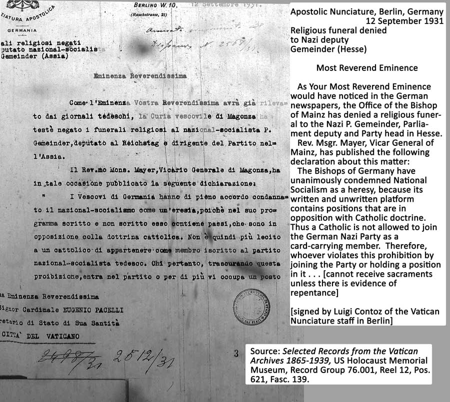

<!DOCTYPE HTML PUBLIC "-//W3C//DTD HTML 4.01 Transitional//EN" "http://www.w3.org/TR/html4/loose.dtd">
<html>

<head> <title>Timeline Translations and Notes</title>
<link rel="stylesheet" type="text/css" href="imystyles.css">
</head>

<body><font size="4"><h2 align="left">Translations and Notes, 1924-1932</h2>

<h3><u>1924</u></h3>

<a name="1"></a><p><strong>Feb. 15, 1924</strong> Cardinal Faulhaber’s words about Hitler in a speech to a Catholic audience in Munich on Feb. 15, 1924:

<blockquote>Adolf Hitler knew better than the <em>Diodochs</em> of his movement that German history did not first begin in 1870 or in 1517, that for the re-establishment of the German <em>Volk</em> the power sources of Christian culture are indispensable, that this work of re-establishment cannot be accomplished with the cult of Wotan and hatred of Rome.  As a man of the <em>Volk</em> he also knew the soul of the South German <em>Volk</em> better than others, and knew that with a movement whose flip-side is struggle against Rome, the soul of the <em>Volk</em> will not be won over.  There is a deeply moving tragedy in the fact that the originally pure spring became poisoned by later influences and by <em>Kulturkampf</em>.</blockquote>

<p>Source: Rudolf Reiser, <em>Kardinal Michael von Faulhaber – Des Kaisers und des Führers Schutzpatron</em> [Cardinal Michael von Faulhaber – The Kaiser’s and the Führer’s Patron Saint] (2000), p.41.

<p>Cardinal Faulhaber’s speech of Feb. 15, 1924, including his remarks about Hitler, was republished in Faulhaber’s book <em>Deutsches Ehrgefühl und Katholisches Gewissen</em> [The German Sense of Honor and the Catholic Conscience], which appeared in 1925, the same year as Hitler’s <em>Mein Kampf</em>.

<p>Notes concerning Faulhaber’s remarks about Hitler: The <em>Diodochs</em> were the lieutenants of Alexander the Great, who are famous to those familiar with classical Greek history for their rivalry for power after Alexander’s death. In the context of Hitler’s movement at the time of the Putsch, “Diodochs” could be taken as a reference to Ludendorff (military commander of the “Patriotic Fighting League” forces), Rosenberg (editor of the Nazis’ newspaper), Ernst Röhm (commander of some of the paramilitary forces), and Scheubner-Richter, a White Russian emigré and advisor to Hitler; none of these lieutenants were Catholic.</p><br>  


<a name="3"></a><p><strong>March 11, 1924</strong> Cardinal Faulhaber’s letter to Cardinal Bertram, Prince-Bishop of Breslau:

<blockquote>Your Eminence,
  
<p>May I most respectfully ask your forgiveness that I am so tardily and deficiently answering your letter of January 24th.  The past months have brought new surprises and tasks from day to day and it is still difficult today, with the flow of events, to summarize with certainty the main strengths and ultimate goals of the <em>Völkisch</em> movement.  The German University Movement (<em>Hochschulring deutscher Art</em>) has shown itself, in the November events in Munich, to be actually an anti-Church element of the young academic circles.  Through repeated statements it is now seeking to spin the facts as though the Movement did not officially participate in the November events, as though the individuals rather spoke and acted only as private persons.  Later, however, when the elections to the general student governing council took place, and the results were announced, no Catholic students were elected to the council, and the University Movement tolerated, at the very least, this flagrant violation of academic parity.  Unfortunately some Catholic students, thankfully not many, played the role of Judas on multiple occasions, among them a Herr von Savigny (from Berlin?), who rejected all efforts by his fellow students to correct him, on the principle that these are political matters, in which the Church has nothing to say.  Since Savigny wants to become an advanced seminarian, and his relatives have spoken out in the press, thus causing public scandal, I have already decided to withhold the necessary letters of support for his priestly ordination.  The Catholic student organizations are lacking in Catholic solidarity, and this lack on the part of individual students and student organizations has a crippling effect in holding back the others from coming forward decisively...</blockquote>

<p>Source: Munich Archdiocese Archive, <em>Nachlass Faulhaber</em>, reprinted in L. Volk, <em>Faulhaber Papers</em>, vol. 1, pp.332-334.</p><br>


<a name="5"></a><p><strong>July 19, 1924</strong> <em>Civiltà Cattolica</em>, page 106:

<blockquote>“‘The Unity of Italy’ and the Disunity of the Italians”

<p>... And just as the spirit of revolution has arisen among the multitude, and is spread and rooted among them, by the principles of liberalism and the school with which it has perverted the people for decades and corrupted above all the young generation, as we have said before, so now it is manifested today in all its violence of fierce and frenetic disintegrating and destroying; it is manifested in the Socialists, in the Communists, in the anarchists, but no less in their liberal, Masonic, agrarian, nationalist and Fascist adversaries ... using the same methods of fighting and violence ... and the predominance of brutal force ... and the well-known “law of the fist” from the barbaric era, reinforced by the manganella, the dagger or the pistol of modern civilization...</blockquote>

<p><a href="Diane1/19221021RomeCCp106.jpg">Italian original</a></p><br>


<a name="6"></a><p><strong>Aug. 2, 1924</strong> <em>Civiltà Cattolica</em>, pages 193-206, on the Italian polical situation in the wake of the Matteoti assassination and ensuing crisis:

<blockquote>“The Delinquency in Public Life and the Church’s Opportune Warnings”

<p>... In any case, however, when a form of government is legitimately constituted, even if it may be initially defective or questionable in various respects - be it in its origins, in its exercise of power, in its representatives, or other such - there is a duty to support it, for the sake of public order and the the common good of society; nor is it licit for any individual or party to plot to overthrow it or supercede it or change it by unjust means.  To the extent modern liberalism, with the volubility of its leading representatives and “all the armament of democracy,” after hearing all the continuing social perturbations, proposes to justify political changes not only by peaceful and lawful means, but also, as we hear, by illegal and violent ones, this cannot be imagined, much less required, to meet with the unqualified approbation of Catholics, who are citizens uniquely called to promote the true common good: <em>bonum ex integra causa</em>  But for the same reason Catholics know the wisdom that brings good even from evil, the restoration from the revolution, like light from darkness ...</blockquote><br>


<a name="10"></a><p><strong>Aug. 16, 1924</strong> <em>Civiltà Cattolica</em>, Aug. 16, 1924, pp. 297-306, on the obligation of priests and all Catholics in Italy to obey the Mussolini Government:

<blockquote>“The Role of Catholics in the Current Political Party Struggles in Italy”

<p>The present circumstances of Italy, especially as concerns the dissensions and struggles of the political parties - which we touched upon in our preceding issue - are extremely trepidatious and distressing. Indeed, the endeavors of the parties, which are tearing each other to pieces, have had ruinous effects far beyond Italy, especially with the discredit heaped upon the duly constituted government of the nation, to the joy of all the false friends and real enemies of Italy who are competing to stoke ever more our internal strife and to throw oil, as they say, on the fire of already raging political passions. But the damage is more extensive and more profound domestically, within the nation, which is handed over to disintegration, anxiety and upheaval, everywhere, even in the sanctuary of the family, and also in the ordering of civic life as well as the circle of religious societies.  Political divisions have so penetrated the ranks of Catholics themselves, not excluding the militant faithful of Catholic Action nor priests of one or another order of clergy, notwithstanding repeated rebukes from Church Authority...
 
<p>Thus it seems all the more necessary to us to summon the minds of all sincere Catholics - also because some of our readers have indicated to us a desire for that - to a serene consideration of some cornerstones or eternal principles of Catholic doctrine, which are consistent, moreover, with principles that are closely associated with public law and with the most rational norms of natural ethics.  From a clear, simple statement of the truth, there will flow forth then the clear implications, both speculative and practical, that remain close to our heart and that hold in balance so many dignified and clear consciences, whether of the simple faithful or of dukes and rulers: what should be the proper role of Catholics in the midst of these political party struggles that threaten to divide even their own ranks with such harm not only to the nation alone, but to everyone, and to the Church itself, their mother and teacher.

<p>II.

<p>The factual preliminaries - which are the necessary preamble to the question - do not need a lengthy exposition or commentary: they are right under the eyes of everyone, and the question makes itself felt strongly to all, but especially to those who participating most directly in political life.  A young party, ardent, hot-blooded, formed rather tumultuously in extraordinary circumstances for Italian society, rapidly strengthened by the lack of will of the preceding government and by the intolerable tyranny of Bolshevizing Socialists, especially in some provinces of Italy, grabbed hold of power with the audacious violence and illegal ways of a strange and not bloodless revolution, concluding finally with a “march on Rome” ...

<p>III.

<p>... 1. We have at present a duly constituted Government and are therefore, in fact, distinctly subject to civil authority, according to the laws that are currently in force. Now it is a principle of natural law, expressly inculcated as well by Holy Scripture, that to such a Government, in all things legitimate, there is an obligation of submission, respect and obedience, and signally from Catholics...

<p>2. For that reason the above-mentioned submission certainly prevents good citizens, and Catholics before all others, from thinking of overthrowing the Government by illegitimate means, as by revolution, by riots, by conspiracies, and the like. that would be precisely in direct opposition to the enunciated principle, as is obvious... 

<p>3. But this obligatory submission does not deny good citizens, including Catholics, the ability to criticize the lawfully constituted Government in proper ways, for the purpose of correcting acts that are deemed to need correction; this can even be a positive duty. And neither does it deny the ability to consider, and provide by legitimate means, a change of Government, which in our days is accomplished by the peaceful votes of the electorate, since, all things considered, such a change can be accomplished without grave harm to public affairs, and can even produce improvement. That is true of submission in general; but the clergy, especially if in pastoral care, must guard well against placing their spiritual ministry at the service of such political struggles, and especially at a moment of overly strong partisan passions, they must refrain from demonstrations that compromise their decorum and the essence of their ministry.

<p>4. Consider if, on the contrary, all things well considered, a change of Government, even if achievable by legitimate means, that is by means of political elections, is impossible without grave misfortune in public affairs, and much more if there is probable danger that the new Government, far from improving, will make public conditions worse, then any citizen who truly loves his country may well endeavor to weigh that impossibility and that danger, but allowing such conditions to continue while he wants a change of government, because the <em>salus populi</em> [Latin: well-being of the people] must be for everyone the <em>supreme lex</em> [Latin: supreme law] that has to prevail.

<p>5. On the other hand, the duly constituted Government must allow the opposition full freedom to exercise the rights granted by the constitution and the laws, and must require subordinate authorities to respect and protect them; otherwise it would be a Government outside the law, that is a tyranny, which, in civilized countries, do not ever have a long life.

<p>IV.

<p>... If the Fascist Government were made to give up power, it has been pointed out by various parties that what would be substituted would be the Socialist Party in coalition with the People’s Party. This “proposal” aggravates more than ever the question, and is worrisome for every serious citizen, and much more for ecclesiastical authorities in that they desire, as they must, to remain removed from, and above, all parties and issues that are merely political.  For this reason, while an article by Father L. Sturzo, published in <em>Il Popolo</em> on the 6th of this month, may appear to distance itself from this “proposal,” we consider it important to say clearly that such collaboration, under current circumstances and with its “ingredients” that it contains on the one hand or the other, would be neither convenient, nor opportune, nor permissible.

<p>We readily admit that if the Socialists came into possession of public power, Catholics could, and even should, respect and obey them in legitimate matters, as a duly constituted Government; the principles mentioned above say that openly. Under conditions that were altogether “abnormal” in a society, such as were the conditions of Catholics in Austria and Germany signally after the War, where they found the Socialists in power or participating, if not ruling, in a coalition Government. The Catholics were obligated to submit, out of necessity, to save the nation from greater evils, but they submitted there to an already constituted Government; they did not contribute to constituting it by their own endeavors as an ideal of concord. Now that is precisely what we deny is permissible for the Italian People’s Party that professes to be informed by Catholic principles.

<p>V.

<p>Indeed a comparison is being made between the Fascist Party and the Socialist Party. Fascism does not profess, properly said, a fixed system of doctrines, boasting first of all of being a party of action, and if some extremely grave errors can rightly be criticized, at least this much is noteworthy overall, that it has suppressed the Socialist tyranny, it has disavowed Masonry in a manner that we hope is sincere, it has restored order in the public sector, and then for Catholics in particular, it does not profess hostility against religion, and in more than one case it has in practice professed respect for religion, and for the family, and for the right to own property. On the other hand Socialism, even that portion of it that presents itself in a moderate form, is essentially hostile to Christianity... We have demonstrated that it is not permissible to desire a change of Government where the new Government would make public affairs worse: and would that not be the case in the substitution of the Socialist Party for the Fascist Party? ...

<p>From that, the results are clear as to the role that Catholics have to play in the midst of the political party struggles in Italy, as is the extreme delicacy with which members of the clergy must comport themselves, whether or not they are in positions of pastoral care; taking active participation in these struggles can pervert justice, inflame passions, and utterly jeopardize the exalted spiritual ministry of peace and love.</blockquote>

<p>Source: <em>Civiltà Cattolica</em>, Aug. 16, 1924, vol. 3, pp. 297-306.

<p>See also <em>ibid.</em>, pp. 492-493.</p><br>


<a name="12"></a><p><strong>Sept. 10, 1924</strong> Bavarian Bishops Conference minutes re blessing of political party flags:

<blockquote>In the official bulletins the clergy are to be most strongly bound by conscience to reject emphatically from the outset every request for joint masses with Protestants, from whichever side they may arise, and in no way to cooperate with them.  The flags of political organizations are to receive no Church blessing.  Since these two decrees have been made unanimously, petitioners cannot appeal to other Dioceses.</blockquote>

<p>Source: “Minutes of the Conference of the Bavarian Bishops, Freising, September 9-10, 1924,” Munich Archdiocese Archive, <em>Nachlass Faulhaber</em>, no. 4057, reprinted in L. Volk, <em>Faulhaber Papers</em>, vol. 1, p.346.</p><br>


<a name="14"></a><p><strong>Sept. 12, 1924</strong> <em>L’Osservatore Romano</em>, page one:

<blockquote>“Jewish Immigration to Palestine Diminishes” 

<p>Dateline Jerusalem, Sept. 11

<p>In the past month 206 Jewish families have arrived in Palestine.  The number of immigrants is diminishing month by month.  This diminution is attributed to the fact that the Jews, scattered through the world, had at first believed that Palestine could become their free and sovereign state, where they would have the ability to work and develop ethnically and economically.  Instead the first arrivals there became convinced that Palestine had become one of the standard British colonies, exploited by the British for the benefit of the economy of the British nation.</blockquote><br>


<a name="15"></a><p><strong>Sept. 12, 1924</strong> <em>L’Osservatore Romano</em>, Sept. 12, 1924, page one:

<blockquote>“The Pope’s Paternal  Speech”

<p>The unanimous interest with which all camps greeted the Pope’s speech to the Catholic University Student movement, and the deferential and respectful citations to it in all the newspapers, attested to its timeliness and usefulness for orienting the political thought of the Country.  But above all it was directed, necessarily, to Italian Catholics, for Catholic Action and Catholic journalism, for all those who work and fight in close union with the Church for the coming of the Kingdom of Christ, and for all those forces of youth who are preparing for advocacy in demonstrations and civil and social institutions of the nation: preparing, that is, for what the Holy Father defined as the salutary and supreme politics of Jesus and his Apostles.

<p>The very fact that the Pope wanted to deal with such a serious and delicate matter, and wanted to deal with it by addressing the most select segment of our youth, shows how the heart of the Pope is not left unmoved by the painful evidence that our camp suffers from divisions and controversies within the ranks of one and the same army; his prudence as Shepherd has perceived the urgency of sending a clear warning and a pacifying appeal; the most high wisdom of the Master has wanted to chart the way that leads everyone back to the consciousness of the true , the good, the right: showing everyone the peril and harm that loom over us if a ready sense of filial obedience does not animate us finally to the fraternal charity of old, to respect, and to reverence toward the papal directives that were always our greatest pride.

<p>Recent discussions, in which we also participated with objective impartiality, revealed even more bitterly the unfortunate results of these political disagreements, which divide and oppose one against the other of these same select ranks of Catholics and citizens who are united by religion and who have consecrated to Catholic Action their intellect, emotions, intentions, their very lives; who manifest like minds and spirits, also moved by the same ideals, guided by Christian sociology, by a desire for the common good and by the struggle against the triumph of evil; these  have been led astray only by particular applications of principles, into discord, into polemics, into inexcusable arguments; so that the combat they have all undertaken in the name of common principles, toward common achievements, instead of being brought fraternally to agree upon the same applications and methods, are separated in the bitterness of strife, in violent discussions that appear too often to be a rivalry by methods of a sort that Christian charity does not know or profess, and that turn those who profess the same faith into adversaries.

<p>In such a state of things that does away, bit by bit, with the fraternity of old, with the just vision of common obligations, with the immutable teaching of our social doctrine, with the precepts of Christian morality themselves in their most direct application to our collective life; a word that summons us to our most dear traditions, to once-beloved obligations, to the cornerstones upon which Christian morality is founded and advanced, to Catholic sociology, to the “politics of Christ” for the salvation of the people of our time, to the salvation of souls for eternity; a reconciling and clarifying word could not fail, as it descends from on high from a sacred and serene wisdom, from a limpid vision of social needs rather than any purely political activity or any partisan interest or competition; all of which raises us back up to its sheer restorative eminence.

<p>And the Pope spoke; he spoke to a privileged group of youth, to a portion of Catholic Youth, which is an auxiliary of our religious and moral Catholic Action and thus cannot be confused with any political activity: he spoke in reference to events and contingencies, based on firm and immutable principles that apply to everyone; he spoke in a way that revealed once again that teachings in religion and morality take only the side of the good, and wherever there is or might be error or evil, there will be expressed its impartial condemnation.

<p>In this luminous atmosphere of pious solicitude for the moral and social safeguarding of our collective life, thoughts soared, echoing the words of the Pope.  We who heard these serene, moving, confident words, like the words of a Father to his beloved children, we felt all the love they conveyed, all the bitterness that inspired them, together with the hope from the certainty of knowing they would be obeyed at once.  It should be said emphatically that such serenity, such paternal confidence, do not thereby render this admonition less pointblank, less serious, or less solemn, this admonition that has been addressed to all, to the Clergy and to the Italian Catholic laity, as coming from the heart, and invested not only with the Holy Father’s own authority as Teacher and Pastor, but with the venerable majesty of the Father, which conveys to the children the indisputable, sacred, inviolable duty to accommodate him.

<p>We do not remember, going back through the years, whether Italian Catholic Action was ever as sorely tested at any other time: but we do know this: that every single time the Holy Father spoke, Italian Catholics obeyed as one man, and every sacrifice of personal opinions, every sacrifice of individual interests, seemed to be repaid many times over by the feeling of absolutely everyone being of one heart with the Pope.

<p>And today, like yesterday, it cannot be otherwise!</blockquote><br>

<a name="17"></a><p><strong>Sept. 14, 1924</strong> <em>L’Osservatore Romano</em>, Sept. 14, 1924, page one:

<blockquote>“The Message and the Messengers”

<p>The Holy Father has spoken to youth...

<p>Here are Catholics who are consistent in all their activities of Christian restoration, recognizing the supreme spiritual Authority as a shepherd to their consciences, whenever they  deal with moral problems, whether individual or social or political; here are Catholics prepared in the ranks of Catholic Youth, fighters in the ranks of Catholic Action, who feel they are soldiers in a single army as they participate in political struggles for the good of the Christian Fatherland, organized in distinct groups but always connected to the supreme guide with inseparable moral unity.

<p>“Concerning a Commentary”

<p><em>Il Popolo</em> in its issue no. 215 has reported in full the Holy Father’s speech to the Catholic University Student movement and added to it a commentary entitled, “Its Meaning.”

<p>We will limit ourselves to examining the final paragraph:

<p>“The words of the Pontiff,” writes <em>Il Popolo</em>, “are not, nor can be on the part of any Catholic who is affiliated with other political parties other than the one involved, interpreted for their own advantage in political contests.” In this they are perfectly correct.  But what appears strange is what <em>Il Popolo</em> writes next: “We believe that they have a much different import, of calling all Italian Catholics, without exception, to a more diligent examination of their own responsibility and their own conscience, in order to orientate their own practical conduct toward what their conscience indicates, at any given time, is the supreme good of the Nation.”

<p>In truth, we must note that the Holy Father did not limit himself to a general call to everyone toward a more diligent examination of their own responsibility, leaving to individual conscience the freedom of forming its “orientation”; rather he gave a positive rule, which imposes upon the conscience of every Catholic the obligation to “orient his own practical conduct” where this directive “indicates at any given time what is the supreme good of the Nation,” and not only of the Nation, but of the Church and of all Society.  Thus he did not exhort to a free “examination,” but to a clear and precise rule for the very conscience of every son of the Church.

<p>So the desire to rely on subjective judgment for a question that is already clearly decided by a categorical directive could be understood as an excuse for disobedience.  If it is insinuated, then, that the Pope cannot enter into such questions of political directives because everything is left to the conscience of each individual, we would be facing a most serious error, certainly alien to the mind of the writer.  And the Holy Father himself condemned that view in words that we repeat here anew for their finely sculpted clarity: “when politics approaches the Altar, then religion and the Church and the Pope who represents it not only have the right but also the duty to give guidance and directives that Catholic souls have the right to request and the obligation to follow.”

<p>And Catholics in other countries have understood this well, as for instance <em>La Croix</em> (September 11th), which indeed introduced the news of the Pope’s speech under the headline, “The Pope must in certain cases give political directives that are binding on Catholics.”</blockquote><br>

<p><em>L’Osservatore Romano</em>, Sept. 15-16, 1924, page one:

<p>“Toward Unity of Ideas and Intentions”

<p>Under the title “Clear Ideas and Words,” the <em>Italia</em> of Milan has published an article in which G. Molteni ...  discussing the Pope’s recent words prohibiting any alliance between the Catholic People’s Party and the Socialists ...

<p>In short, the Holy Father not only saw a matter set before the public which, in itself, had an inherent capacity to mislead, but he saw it enter and disturb the minds of Catholics, especially young people, and establish itself as worthy of consideration and approval; saw it rise as a “preparation of conscience” to an eventuality which thus had the capacity to arise as a matter of discernment, persuasion, and then in compromise of the principles of Catholics, which would not have been a historical event, the contingency of tomorrow, but as of today became the elaborate formation of that event and of that contingent future...</p><br>

<p><em>L’Osservatore Romano</em>, Sept. 17, 1924, page one:

<p>“Clarifications”

<p>Yesterday the <em>Popolo</em> faithfully published our observations about its article on the Pope’s speech and for that we are grateful.

<p>But even though we recognize their good will and their effort to mitigate their previous statements, we still cannot declare ourselves totally satisfied with their reasoning in the rest of the article.

<p>Their reasoning tries to justify their previous claim of “a subjective orientation” by stating that they meant to speak “of all Italian Catholics, none excluded, and thus also of the overwhelming majority of Italians who are however not members of Catholic Action nor of political parties inspired by Christianity.”

<p>Now, it seems obvious to us to observe that all these Italian Catholics, if they really are practicing Catholics as the <em>Popolo</em> supposes, cannot take their direction, after the words of the Pope, from their own subjective criteria, nor therefore be satisfied with a more vigorous examination of their own responsibility and their own conscience, when now the Pope has spoken, and spoken so clearly, whether against violent modes of action of some, or against perilous modes of action of others. 

<p>Thus it is not accurate, then,  when the <em>Popolo</em> adds that the Holy Father “with his exalted words wanted to signify how the element of reconciliation and normal recovery of our moral and political life resides in the simultaneous avoidance of falling prey to violence on the one hand and to Bolshevizing subversion on the other.”

<p>We agree as to the need to avoid violence, but as to what concerns Bolshevizing subversion, there appears to be a bit of exaggeration, as noted yesterday in Molteni’s article; an exaggeration that would displace the force of the argument and relegate the word of the Pope to being merely academic, as Molteni writes, which would be reckless in our view.

<p>It is not actually a matter of “Bolshevizing subversion,” the danger of which, we all trust, is quite remote, at least in Italy; it is a matter of Socialism, and the Pope has deplored Socialism’s currying favor under the pretext of opposing Fascist violence, which no Catholic can ever approve.</p><br>


<a name="18"></a><p><strong>Oct. 3, 1924</strong> Pacelli to Pizzardo:

<blockquote>Re: On the appeal sent to the Fulda Bishops Conference by the Committee of Catholics belonging to the German-National Party

<p>Most Reverend Excellency,

<p>Together with the relevant Enclosures, which I carry out my duty to enclose herewith for Your Most Reverend Excellency, I received the venerated Dispatch No. 34510 of September 20th this year.

<p>The appeal sent this past July to the Fulda Bishops Conference by the Committee of Catholics belonging to the German-National Party was already known to me, having been communicated to me by President Baron von Landsberg-Steinfurt.  Not having discovered, however, any mention of this issue in the Minutes of the aforesaid Conference, I turned to Eminence Cardinal Bertram to know what resolution, if any, the Most Reverend Bishops had taken in this regard. Today I received this Highest Eminence’s response, a copy of which I have the honor to send here-enclosed to Your Excellency, and from which You will be able to deduce the view of the aforesaid Cardinal concerning the position of the Conference.

<p>Although, as I have already had many occasions to report to the Holy See (cf., for example, Report No. 22353 of November 16, 1921), the left-wing tendency manifested in recent years by not a few members and leaders of the Center Party, represented especially by ex-Chancellor Wirth, has created grave discontent among Catholics of a nationalist and conservative tendency, it is necessarily recognized by Eminence Bertram, nonetheless, that indeed the current Center Party, despite its not few defects and errors, is the only party upon which secure trust can be placed when it is a matter of defending the rights and interests of the Church in Parliament. In the German-National Party (<em>Deutschnationale Volkspartei</em>), the Protestants, of whom a notable portion are rather intolerant and profoundly hostile to Rome, have a nearly absolute preponderance, which can only with difficulty be neutralized by the relatively small number of Catholics who have joined this party. This explains why the great majority of the clergy favor the Center Party.

<p>The aforesaid Baron von Landsberg-Steinfurt and other members of the aforesaid Committee of Catholics belonging to the German-National Party have at various times asked to be received by me, and I, differently from what Eminence Bertram writes that he has done, did not believe I could refuse to welcome them, the Representative of the Holy See needing to be, in my humble opinion, accessible to Catholics of all tendencies. In the discussions I had with these Gentlemen, I told them that I was and intended to remain at a remove and above all parties, but I also could not fail to keep in mind, in a sensitive and general way, the grave obligation of conscience incumbent upon all Catholics to support only those parties that give sufficient guarantees for the supreme interests of the Church. And because they maintain that their purpose is precisely that of seeking to exercise within the German-National Party a favorable influence for religious interests, I made them understand that the touchstone will soon be at hand in Bavaria in the parliamentary debate over the proposed Concordat, it being obvious that if the party under discussion were to vote against, the presence in it of true and faithful Catholics could become unsustainable. 

<p>I would be most grateful to Your Excellency if you would let me know, for my opportune direction and guidance, the view of the Holy See in this sensitive issue, and together with sentiments of profound obsequy, I have the honor to confirm myself Your Most Reverend Excellency’s Most Humble, Most Devoted Servant,

<p>+Eugenio Pacelli Archbishop of Sardis

<p>Apostolic Nuncio</blockquote>

<p>Source: www.Pacelli-Edition.de, Dokt 86</p><br>


<a name="20"></a><p><strong>Dec. 20, 1924</strong> <em>Civiltà Cattolica</em>, Dec. 20, 1924, p.487:

<blockquote>“An Episode of Zionism in Palestine”
  
<p>The board of directors of the Catholic Union “for the Holy Places,” obedient to the voice of the Supreme Pontiff in his promulgation of the Holy Year, enacted a resolution at a meeting last October in which, reaffirming the program for revendicating the rights of Christianity over Palestine and especially over Jerusalem, Catholics of the whole world are exhorted to cooperate for “settlement and final ordering of the Holy Land as required and called for by the sacred rights of Catholicism.”

  <p>The Rome office of the Zionist Organization considered itself entitled to protest against this resolution, in a circular released to the press which, among many declarations and justifications, of moderation, of the value of Zionism and of its basis in revelation and in the prophets - things that all indeed have value - affirms as obvious and incontrovertible that “Zionism has never done anything to profane the Holy Places”; that indeed “the Zionist movement proceeds respectfully toward the rights of others, staying within the bounds marked by international accords and by the Mandate, under the responsible control of the Mandatory Power and the League of Nations”: and appealing to the humanity and to the love of neighbor that the Jewish Bible teaches to all men, exhorts anti-Zionists to “a more rigorous and decent understanding of the ideals of a resurgent people who are committed to spreading among all civilized peoples ... the message of brotherhood among sons of the same father.”(footnote: The circular also complains that someone has described as a “filthy rabble” those minions traveling today to Palestine from Poland, Russia, and Romania.  It seems that the Zionists of Rome have not read what Herzl wrote about the filth in which they squatted and lived as wretches in his time, dens of pestilence for the nations among whom they lived!  Theodore Herzl’s <em>Zionistische Schriften</em>, vol. II, p. 150.)
[Investigator’s Note: We have not been able to find the cited passage in Herzl’s <em>Zionistische Schriften</em>.  There is a substantial question whether he wrote the above passage, or whether it was invented.]

<p>To tell the truth, we do not have a mission to defend the board of directors of the Catholic Union against the diatribes of the Zionist Organization.  Of Zionism, its qualifications, its juridical validity with respect to the more remote past and with regard to the more recent past of the day before yesterday, namely the circumstances of Palestine in the European War, we have written in timely detail, and perhaps our readers have not forgotten. (Cf. <em>Civ. Catt.</em> 1922, vol. 3, pp.116ff.)  Today we only want to report a public fact that touched our brothers in the Holy Land and aroused even the Muslims to anger, and to place that fact up against the “incontrovertible” statements of the Zionist Organization.  A fact is worth more than a volume of words.

   <p>The episode we take up here touches upon the religious question and the respect for the beliefs of the non-Jewish people that is repeatedly promised by the Mandate for Palestine.  It is not as though this is the first or only event for which Christians might have complained of Jewish hostility.  There is not enough time to circulate the rumors about film and theater performances that are insulting to Christianity, and in particular about an uproar during a Jewish feast, called Simon the Just, in which an effigy was crucified, stoned and burned.  But the event occurred in a Jewish neighborhood, and although certified by several witnesses, the news was not divulged to the citizenry.  

   <p>Quite different are the circumstances of the sad episode to which we call the attention of the Christian reader today.  It originated from a chance event which should be introduced with a few reliable words.

   <p>Dr. Theodor Herzl, the founder of Zionism, of whom we spoke amply in his time, died at Vienna in 1904, leaving a son Hans who, educated until around the 1890s in Judaism, moved to England for studies and there lost, as he himself writes, the time and the memory of his family traditions.  (footnote: See <em>The Universe</em> of London, November 7, 1924.  The convert tells his story succinctly there.)  But the religious problem tormented his soul and drove him to seek a doctrine first in the conventions or lessons of theosophy and spiritualism, but to no avail: then in the conferences held in London’s Hyde Park by the Catholic Evidence Guild, often standing several hours at a time to listen to the speakers: he had finally found “food and drink” for his intelligence.  But his heart had its difficulties:  He remembered the maxim his father inculcated in his last years, that it is an unworthy thing for a Jew to abandon his people.

   <p>For the convenience of his office he had to return for several months in 1923 to Vienna as the English correspondent of a bank: and there he heard talk of a Baptist community that was said to live a life inspired by the dictates of the gospel.  Curiosity drew him often to their religious functions: his soul was profoundly moved by the words of the pastor who, agreeing with his lively desire, first gave him the book of the gospels to read, and then baptized him on the 20th of July. 

   <p>Receiving baptism, Hans Herzl wanted, he writes, “to enter into the larger Christian community: but even then he understood that this would not be true if he did not become a Catholic.”

   <p>In fact, back in England, he revealed what had happened to one of his relatives who, though not a Catholic, told him frankly that the path on which he had placed himself should logically lead to Catholicism, and sent him surely to a religious Jesuit, Fr. Day, “and everything went full speed ahead.”  On last October 19th, in the chapel of Our Lady of Zion, Herzl was received into the Catholic Church in the presence of a good number of the more honorable converted Jews: and on the 24th, the feast of the Archangel Rafael, he made his first communion in the same chapel.  “May the archangel who restored sight to Tobias, also illuminate me and guide my journey to salvation.”  God verifies the augury.

   <p>If such an event gave strong reason of spite to all the synagogue, for the Zionists it was a double blow of thrust and slash.  The new convert was the one who had to consider Zionism as the legacy of his family.  Was it not the work of his father who, as the new captain, had aroused among the dispersed remnant of Israel the hope of a new Kingdom of Judea?  And here he is instead, not only deserting Zionism but disowning the same national tradition.  The humiliation was shameful:  for revenge they tried to cast ridicule on his conversion and thus contempt on the convert, the typical artifice of all the shamed.  And the way it was done is this. (footnote:  Note that the satire in the Zionist newspaper was published after the first news of the conversion of Hans Herzl from Judaism to the sect of the Anabaptists.  That sufficed for the blasphemy.)
   In the Zionist newspaper entitled “<em>Doar Hayom</em>,” which is published in Jerusalem, a humorous story was inserted of a certain Asmavet, placing in the scene the persons and matters we mentioned, styled even worse, as can be imagined.  Old Theodor Herzl, unhappy at his son’s bad end, goes venting his discontent, between the serious and the comic, with the Almighty.

   <p> “When the righteous (Theodor) was called to the court of heaven, he came into the presence of the angel of repose and noticed that he remained silent.  The righteous thought this was a subaltern who surely did not know all the secrets.  Then he approached the higher officials and stood erect before the Meta-throne, the executive vice president of heaven.  And he noticed that he also remained silent and made no mention of the sin of his convert son.  So he thought that only the director himself held the matter in confidential form, that is in secret.  Finally he was introduced into the presence of the Holy One – may he be blessed forever – in all his glory and all his being.  He was met with a smiling face and a solemn greeting.

   <p> “When the righteous saw that he also remained silent, he began to fear and ponder: and he resolved to begin to speak immediately himself.  Then these words popped out:  Lord of the world!  Surely the story of the disgrace of my son will have come to your knowledge... The Almighty replied with a familiar gesture of his hand:  Even here, an instance like that once occurred.  That’s bunk, they’re not at all alike, cried out the righteous:  for ‘yours was a bastard,’ but mine, on the other hand, was the legitimate son of a father and mother.”
   
<p>The phrase alluded openly to Jesus Christ, the son of the Virgin Mary, and the blasphemy publicly struck all followers of the Christian religion in the divine object of their faith.  Thus the Zionist newspaper did not hesitate to violate with audacity the laws of the country and to offend with filthy cowardice the most sacred rights of the majority of the Palestinians.  The thing was not to be tolerated.

   <p>As soon as news of this sacrilegious affront was disseminated in the city and the religious authority made sure of the exact incriminating text, His Beatitude the Latin Patriarch of Jerusalem sent the government of the district the following protest:

   <p> “Your Excellency, I have the honor of calling the attention of the Government to a recent edition of the newspaper <em>Doar Hayom</em>, which contains an odious article blaspheming the sacred person of our Redeemer Jesus Christ, described as a “bastard,” and insulting at the same time Almighty God.

   <p> “It is impossible to conceive a more wanton and flagrant crime against religion, or a more provocative and injurious violation of the rights of Christian citizens in this City of Jerusalem.  That the Christian religion is so publicly blasphemed with such insolence in the Jewish press, that the most sacred objects of Christian faith and love are traduced with such odious and repugnant cynicism by a Jewish newspaper in Jerusalem, are facts which the Government, I believe, cannot permit, in the interest not only of Christianity but of maintaining public peace.  I have the honor to suggest that the most energetic measures be taken immediately to incarcerate the editor and to initiate criminal proceedings against the accused.

   <p>By such action the irritation of our people will be quelled and trust will be maintained in the power of the Government to protect the common honor of Christianity and defend the rights of the Christian population against similar sacrilegious publications.”
   
<p> “I have the honor, etc., Luigi Barlassina, Patriarch.”

   <p>To this protest the governor hastened to answer the next day in these words:     

   <p> “Your Beatitude, I have the honor to acknowledge the receipt of your letter of yesterday and to inform Your Beatitude that I have not tarried to call the attention of the central government to the sacrilegious article you so justly reproved, and to ask that a case proceed against the editors as soon as possible.

   <p>“Thanking Your Beatitude for calling my attention to this event, I have the honor etc., Ronald Storrs, District Governor.”

   <p>Thus even the civil authorities, understanding the gravity of the event, proved ready to enforce the laws and punish the impious recklessness of the blasphemers. Meanwhile the Patriarch, awaiting the governmental action, had news of the scandal published in <em>Raqib Sayum</em>, the diocesan Arabic newspaper, and in a circular letter of August 28th ordered that in all the churches of the diocese there be held public functions of adoration of the Blessed Sacrament and of prayer to the Blessed Virgin in reparation for the execrable impiety written against Him and his divine Son.
   
<p>The announcement in the diocesan newspaper concluded with these words:  “We have full hope that the civil authority will know how to take the necessary measures to prevent a repeat of such sacrilegious provocations that are an atrocious offense against the Christian conscience.  And would it really be the case that in Palestine, in this land bathed with the precious blood of the Redeemer, we would have to tolerate vituperation against the Christian name?  The Jews know that, if they are descendants of the crucifiers of Christ, we are sons of those heroes who defended the faith at the cost of their blood and their lives.”
   
<p>But meanwhile the Government remained silent.  After waiting eleven days, not seeing any indication of the legal action mentioned in the same letter of the governor, the Patriarch addressed him by means of an explanation in this form:

<p> “September 9, 1924
   
<p> “Your Excellency, In reference to your letter of the 29th of last month, in which it was disclosed to me that you had informed the central Government about the blasphemous article published in the Jewish press, requesting that process be instituted against the editors in the shortest time possible, I allow myself to ask what is the current status of this request and what process has been instituted?
   
<p> “I am prompted to ask particularly by the news in the <em>Daily News Bulletin</em> yesterday, which rather said “no trial will be conducted by the Government against the <em>Doar Hayom</em>.  A reply in the morning would be appreciated.  I have the honor etc.”
   
<p>And in fact the governor courteously sent the following information to the Patriarch that same morning.

<p> “September 9, 1924.
   
<p> “Your Beatitude. – In reply to the letter of today I have the honor to inform Your Beatitude that, as a result of the strong remonstration of the Government, the Doar Hayom published in its Chronicle section of September 2nd a formal retraction of the blasphemous article printed in an earlier issue.  I have the honor etc.”
   
<p>The reply was a little hasty and a little strange.  Things were changed:  there was no more talk of a trial, but a retraction had been published.  Why was no notice of it given to the Patriarchate?  Who rendered authoritative judgment of its worth?  Did it provide the just satisfaction that the Christian religion and the people who profess it had a right to demand?  Let this be judged by the reader, under whose eyes we place the text of the “formal retraction” which the Jewish newspaper published according to the remonstrations of the Government.
   
<p> “Declaration. – We have been made aware that the Christians of Jerusalem are enraged on account of the novella about Asmaveth published in <em>Doar Hayom</em> on August 15.  The community of Jerusalem knows that our newspaper has never entered into religious discussions.  We regret to have given, unintentionally, discomfort to some of the Christian community: and we declare publicly that we are very sorry for having given rise to bad interpretations with our literary appendix, if this novella has a significance which affects the religious sentiments of our Christian readers.”
   
<p>It requires not good faith but simple-mindedness to see a retraction in these phrases of ironic contrition for a discomfort given “unintentionally” and for “bad interpretations” without intent, as if the sacrilegious injury was not expressed by the letter and the explicit text of the novella.  Of this, which was the main point at issue, not even a word.
   
<p>But to offer a just basis for assessing this hypocritical declaration, it is necessary to read what the Zionists wrote in the same days in their newspaper, laughing sarcastically at the horror and indignation of the Catholics, and caricaturing the steps they took with the government to punish the insult against their religion.  In an article entitled “A tempest in a teapot,” they are surprised that Catholics “make so much noise over a funny joke without a shadow of offense to Christian sentiments.  Even if the joke had mistakenly brushed up against their religious sensibility, a nod to the newspaper would have sufficed to elicit its apology without anything more, as it did of its own will (!) ... and instead they have tried to turn the whole world upside down.”  And in another article directed to Jewish school students there is a burlesque description of crowds of police and servants of the Patriarchate buying the issue of the newspaper to read the incriminating novella.  “Golden business for the newspaper!  The passage against religion was translated into seventy languages, and a copy of it was sent to the Chief Rabbi, to the Pope in Rome, to the League of Nations in Geneva, and above all to the Government: in a word, our Holy City was in complete consternation.  From one of our students who was sent to spy, I knew that one of our Israelite brothers was charged with translating my prose into the language of the Romans, and when he came to the guilty passage … he lost his Latin and gave the newspaper back to the bosses saying he found the Talmudic expressions too difficult to understand and turn into Italian.”
   
<p>With this impertinence the Zionists mocked the Christian people, the Government, the Patriarchate: and did not hesitate to raise their voice even a bit higher, in quasi-menacing tones:  The purpose of these malefactors against Israel is always one and the same: to show the authorities that nothing here is going well and that we have to make changes to things in London as to what concerns our national home… But I tell them that no reaction ... and not even all the prayers ordered this week in all the churches will come to anything, because little by little sound reason will do its part to win over all the Blacks to the extent they are powerful in our national territory.
   
<p>In this state of things, the ecclesiastical authorities could not be in doubt.  In the face of the aggressive audacity of the blasphemers, any sign of indecision would have brought harm and shame to the Christian name.  The Government had not taken the word of the Patriarch into account: but they miscalculated.  Turkish law, which is still the law in force in Palestine, under the heading of chief crimes that disturb internal security, in article 55, provides that “whoever speaks against the chief prophets shall be sentenced to prison for one to three years”: and the Council of Jerusalem, at the time of the promulgation of the law, posed a question to Constantinople: does the name of the prophets contemplate only Mohammed and some other personages of Islam; the Minister of Justice replied: it contemplates all the prophets: and Jesus is one of the greatest prophets honored by the Muslims.
   
<p>Now who can deny that this law is brutally violated by the rude insult flung in the face of Christ by this pack of Zionists who publish the “Doar Hayom”?  Justice requires therefore the appropriate remedy:  and His Beatitude the Patriarch, the representative and custodian in Jerusalem of that faith which recognizes in Jesus Christ the Son of God himself made Man for the redemption of the world, by the power of his high ministry and for the protection of the faithful people, could not agree to the guilty escaping the merited sentence.  To this effect he sent the Governor the following communication:

<blockquote>September 11, 1924

<p>Your Excellency, I have received your letter of the 9th of this month.  From your letter of the 29th of last month, in which it is affirmed that the article in question was truly reprehensible and blasphemous and thus a request had been sent to the central government for an action against the newspaper, I had been led to suppose that the government would immediately open a legal process.  A serious crime has been committed: the authors are known: the law is clear in this matter.  If there is no government action, I will be forced to file a formal complaint for a proceeding against the perpetrators of that horrible blasphemy committed with brazen impudence by the press in an official language of this country.  I have the honor, etc.
   
<p>And the complaint was formally presented to the court of the Holy City by a Catholic Englishman, attorney Mockler, who was duly appointed by the Patriarch.  It was now up to the Turkish magistrates to do their duty.
   
<p>The people of Palestine have already done their part:  and from all the religious elements that it comprises, arose a unanimous cry of detestation against the sacrilegious crime of the Zionist newspaper.  It would be superfluous to collect all the voices of the Catholic population that were the first to protest, following with all their soul the word of their Pastors.  Listen instead to the voice of the Moslem Community of Haifa which, through its head Sulaiman Saleh, presented to the High Commissioner of Palestine a brief but proud declaration in which, after having recalled the text of the Turkish law we cited, continued:

<p> “For the insult of the Zionist newspaper against our Lord Jesus (to whom be glory) greatly disrespected all Muslims, because our noble Koran confesses the purity of the Messiah and the chastity of the Virgin Mary, our Lady.  Wherefore the Muslim Society of Haifa strongly protests against such audacity and demands that the government severely punish the brazen author of such infamous writing: and thus calm Moslem souls and public opinion and also provide a lesson so that other writers will not dare to imitate this.
   
<p> “Otherwise all responsibility for what may happen will concern the Government which has not given serious consideration and care to the matter.”
   
<p>The tone of the writing, as can be seen, is quite proud and resolute.  In its turn, the Islamic-Christian Session of Jerusalem published a “General proclamation to the noble Arab Nation,” in which is manifested the keen anxiety of souls upon hearing “the extreme injury inflicted against our Lord Jesus Christ (worthy of all glory and respect) by the Zionist society Hassallel in one of its newspapers, saying Christ was the son of adultery (which may God pardon a thousand times over).”  And it continued with hardly repressed rancor:
   
<p> “And we recall that the same society, a while ago, in one of its newspapers greatly insulted the noble Arab nation by publishing that the Arab is a born assassin.  Before that, the same society had severely maligned some religious congregations dedicated to teaching and education.
   
<p> “To remedy, therefore, in some way, this nefarious religious insult which was never experienced in our country before the perverse policy by which today we are governed by force, the executive committee of the sixth Palestinian Arab Congress charged its secretary to initiate cases in the civil courts against the above mentioned Zionist society: this secretary is appointed as a prosecutor and vice-regent of Muslims and Christians of Palestine whose beliefs were injured deeply by such insult.  The aforesaid secretary will also initiate cases in his capacity as a Moslem private person.
   
<p> “The Committee asks everyone to keep calm until the case is finished and justice has run its course.”
   
<p>The schismatic Greek Orthodox of Jaffa did not want to be outdone by the others and sent the English High Commissioner an open letter, complaining of the offense done to their religious beliefs, all the more since the government of his royal majesty had declared and had not ceased to declare by the mouth of his political representatives that the first duty of the Mandate is to preserve and protect the religious dogmas and traditions of the population that inhabits Palestine.  
   <p>“Therefore we demand legal inquest against the director of the newspaper and against the author of the article, and ask for the application of the laws of the press against the aforesaid newspaper.  We await the outcome of these our legitimate requests.  We trust we will see in the representative of the English government in Palestine a man who maintains order and peace in the Holy Places and severely punishes offenders who would have such a great deal of audacity.”
   
<p>Even outside Palestine, in the neighboring populations reached by reports of the turmoils, there were demonstrations of full agreement with the anti-blasphemy protests, and perhaps among others there arose more serious reflections, such as was the following from the Moslem university of Cairo:
   
<p> “To His Excellency the High Commissioner of His Brittanic Majesty for Palestine.
   
<p>We the undersigned, professors and students of Ruak-Assuan in Azka (the main mosque), in our religious character, denounce and protest against what the Zionist newspaper Doar Hayom published in disrespect to Christ the Lord – may He be hailed – saying that He was a bastard.  (The word that comes out of their mouths is grave enough, not to mention it is a lie)(footnote: Words from the Koran).
   
<p> “We consider the publication in the aforesaid newspaper to be a violation of the respect due to the heavenly religions and an agitation of public opinion.  We find that the silence of the Palestinian Government about such a violation is contrary to the principle of the Mandate which commands respect for the sentiments and beliefs of the people under its tutelage.  We therefore ask Your Excellency to remedy such a grave evil, striking with an iron hand, driven by duty, with such bravery to calm minds so that serious evils do not ensue nor the example be followed by publishing similar infamies.

   <p>And we agree with the Secretary of the Executive Committee of Jerusalem in his protest and in the lawsuit initiated in the name of the Committee.

<p>Signed by professors: Roteb Abu Gazzal

<p>Iusef Abdel Aruzak

<p>By students: Muhammed Rafik Elababidi

<p>Aly Mohammed Schrab Ganem</blockquote>

<p>P.S. It was just reported that the trial before the tribunal of Jerusalem concluded in recent days, with a sentence that condemned the author of the article to a fine of twenty-five pounds sterling and the editor to one of five pounds sterling – thirty pounds in all, like the thirty denarii that the people paid [to Judas] in the Gospel.  We do not want to search out the reasons that inclined the tribunal to be less severe than the Turkish law:  we at least hope that the sentence is warning enough to persuade the Zionists to respect the rights of others.</blockquote>
   
<p>Meanwhile, the facts that we have documented at length in response to the adversarial statements, suffice to show the rabid animosity [<em>rabbiosa animosità</em>] brought by Zionism into the Holy City and the tumultuous danger to the tranquility and mutual respect that the Mandate promised to maintain.</p><br>

<h4><u>1925</u></h4>

<a name="23"></a><p><strong>1925</strong> <em>Deutsches Ehrgefühl und Katholisches Gewissen</em> [The German Sense of Honor and the Catholic Conscience] by Michael Cardinal Faulhaber:

<p><a href="Diane1/19250800BavariaFaulhaberBookCover.jpg">Book cover</a>

<p>Excerpts:

<blockquote>Just as the recent earthquake in the Japanese island empire sent out far-reaching aftershocks over land and sea, so also the nations-quake on the European continent, brought on by the November Revolution of 1918, is still having years-long aftershocks. In the past months we entered into a new phase of development of this era of revolution. Marxism, in its innermost essence the antithesis of the Church, must, if it does not want to stand pat with half-measures, proceed from revolution against the thrones to revolution against the altars. That was to be expected from the outset.  What was unexpected, however, was the farce played out here in Munich, whereby a great many of those who first marched out against Marxism suddenly did an about face and began, shoulder to shoulder with the Marxists, the campaign against the “Ultramontanes” and “Jesuits” and “Romelings.” The anger that the altars were still standing and the Pope was still wearing the triple tiara was evidently just as great as the anger that other thrones were no longer standing and other crowns had fallen.

<p>No <em>Völkisch Gemeinschaft</em>-life can do without intellectual supports, moral principles, and religious sources of strength...

<p>What I want to speak about today from the heart in a gathering of Catholic academics, in light of my personal experiences and observations over the past months, toward Catholics by way of explanation, toward anti-Catholics by way of warning, I am summarizing in academic fashion in 20 theses.

<p>Thesis 1. The more the great multitude mindlessly runs after revolution against thrones today, and against altars tomorrow, the more must thinking people, objective and right thinking people, maintain interior and exterior freedom of judgment, and the louder strikes the hour for Catholic academics.

<p>... 

<p>Thesis 2. A Fascistic wave is flowing through the nations, summoned forth by the bankruptcy of the Socialist worldview. At its purest and for that reason most successful, the Fascist wave has opened a way in Italy up to now. In America it has already branched into two streams, the Legionnaires and the anti-Church Ku Klux Klan. Also in Germany the nationalist idea has broken forth, in its origin and early course a pure spring, in its further development, however, clouded by tributaries and finally ending up in the Church-hatred of the Ku Klux Klaners.

<p>The flaring up of the nationalist concept is today an international, not a purely German phenomenon.  Three currents of this Fascist “Gulf Stream” can be distinguished.  At its purest, Fascism has opened a way in Italy.  Even though underlings have here and there, on their own responsibility, committed or tolerated severe, even bloody excesses against Catholic association houses and gathering places of the Catholic movement, still the supreme head of Italian Fascism has up to now restrained with a firm hand the spirits of culture war against the Church, and has built his work in peace with the Church. That is all the more highly to be valued since it is precisely in Italy that the anti-Vatican Revolution of 1848, the taking of Rome in 1870, the hostile policy up to Crispi’s Prime Ministry and up to the rabble-rousing against the neutrality of the Pope during the World War are still fresh in the memories of the people and are kept alive by many memorials such as the statue of Giordano Bruno on the Campo di Fiori and of Garibaldi on the Janiculum hill. 

<p>In America the Fascist stream is divided into two currents: While the Legionnaires take up the Pan-American concept with all means and not always with pure spiritual weapons, but still without taking a frontal position against the Roman Church, beside them the secret society of the Ku Klux Klan has been formed, which steps forth with fire and sword against all positive religions and which turns with special severity against the Roman Catholic religion. In Germany the nationalist concept, after it fell on bad times during the war and the post-war years by the overburden of victims that it demanded, and by the Revolution, has recently broken forth again like a spring from hidden deeps, but it threatens for a great part of the people to get stuck once again, because, as it flows along, it is deviating from the pure nationalist concept and ending up in the Church-hatred of the Ku Klux Klaners, who are already self-identified as <em>Indianerrests</em> from a bygone time. Adolf Hitler knew better than the <em>Diodochs</em> of his movement that German history did not first begin in 1870 or in 1517, that for the re-establishment of the German <em>Volk</em> the sources of strength of Christian culture are indispensable, and that this work of re-establishment cannot be accomplished with the cult of Wotan and hatred of Rome.  As a man of the <em>Volk</em> he also knew the soul of the South German <em>Volk</em> better than others, and knew that with a movement whose flip-side is struggle against Rome, the soul of the <em>Volk</em> will not be won over.  There is a deeply moving tragedy in the fact that the originally pure spring became poisoned by later influences and by culture war against the Church. More for patriotic than religious reasons is this change of direction by the <em>Völkisch</em> movement toward <em>Völkisch</em> culture war against the Church to be deplored.

<p>Thesis 3. Culture war against the Church is the most inglorious, the most hopeless, and the most disastrous type of battle.  The most inglorious, because those with weapons are up against those who are unarmed, or rather because  raw power marches out against purely spiritual powers with unmatched weapons.  The most hopeless, because it ended in defeat even for the Iron Chancellor of the 1870s. The most disastrous, because it rips open anew the wounds of religious division and it strikes the most vulnerable spot of the German Siegfried, causing greater harm to <em>Völkisch</em> than to religious life.  A new orientation of German culture in a sense hostile to Rome would result in a wrong development of the while life of our <em>Volk.</em>

<p>...

<p>Thesis 4.  Peace between the German denominations, equally a necessity of state, can only be an active, strength-summoning peace, not the peace of the grave, not the silence of death for that which offers light and strength to its own denomination, not a deathblow for that which has brought the other denomination to <em>Völkisch</em> cultural activity.

<p>In Germany both denominations must live next to each other in civil peace ...

<p>Thesis 5. The German sense of honor and the Catholic conscience must engage each other openly and honorably concerning the events of November in Munich, whose breaking waves have gone through all of Germany ...

<p>Just like the culture war against the Church of the 1870s, it is now being asserted again that they are only struggling against the Jesuits, not against the Church, only against political preachers, not against religion, only against those oriented toward Rome, not against German Catholics.  Do not let yourselves be deceived by such distinctions! Judgments about what is Catholic or what constitutes the essence of Catholicism, these are matters for the teaching office of the Church, the responsible authority of which is the Pope for the entire Church, and the Bishop for his Diocese. You cannot be an opponent of the Revolution of 1918 and still profess the axiom that in a democratic era it is also for the people, not only the Church authorities, to make distinctions about what is essential and inessential in religion...

<p>Thesis 6.  A grave disservice is done to our people and Fatherland if the Catholic portion of our people and especially the Catholic student body are impeded from joyful participation in the reconstruction by suspicions that they are Greeks within Troy or by placing them on a level with the Red International...

<p>Thesis 7. Sense of honor and conscience must also, with head held high, refuse to follow in the campaign of lies that has been set in motion with tainted weapons againt political opponents and ecclesiastical persons, without any respect for the truth, with much pathos and little ethos...

<p>It was not intellectual independence, it was herd behavior of the most mindless sort, when after the failure of the November Putsch a few string-pullers behind the scenes tried to divert the rage of the people, even academic elements of the people, away from those who were really to blame and toward the Bishop. The old proud phrase, “to be German means to be true,” was made a mockery in those days.  Leaflets were distributed on every street and tossed into every house, on public plazas deeds of violence against ecclesiastical persons and the murder of the Archbishop were demanded, without the government or the police raising a finger...

<p>On St. Sylvester evening 1923 [eve of New Year’s Day 1924], I preached in the Cathedral as I do every year, specifically on the theme, “The Church of the Eternal Christ.”  In that sermon, since on the one hand the famine was horrendous at that time, and on the other the embitterment of the people threatened to degenerate into pogroms against Jews, I observed: We must all help each other in Christian love, no person may go hungry this winter, the life of every person is precious, also the life of an Israelite. From this single sentence of a three-quarter hour long sermon, unscrupulous reporters drew the assertion that I had “taken the poor, starving Jews under my protection” and had given a political sermon. There is a historical saying that conscious lies are like scorpions: one looks just like another.

<p>A shameful flood of lies and conscious falsifications of history waltzed through the streets of Munich, and through Bavarian and Austrian newspapers, in the days of November 1923... From Württemberg I received the news that former Württemberg officers would not let themselves be dissuaded that Cardinal Faulhaber had set the scene for the Hitler Putsch, and a letter from Sigmaringen reported it was believed there that the Hitler Putsch was inspired by Rome. At the same time the assertion was fed to the people in Munich by leaflets and alley speeches, that Cardinal Faulhaber had, as the man behind General Commissar von Kahr, suppressed and strangled the Hitlerite freedom movement.

<p>On November 10, 1923 General Commissar von Kahr, whose name I mention only with the greatest respect and whose services will receive more grateful thanks in the future than in the present, received a call: “This is the Abbot of St. Boniface [Benedictine Abbey in Munich].  I raise a protest on behalf of myself and my Abbey against the proposition that Cardinal Faulhaber was involved in the freedom movement.”...</blockquote>


<a name="22"></a><p><strong>Feb. 7, 1925</strong> <em>Civiltà Cattolica’s</em> summary of the Bavaria-Vatican Concordat, Feb. 7, 1925, vol. 1, p.282:

<blockquote>Art. 1 – The Bavarian State assures the freedom and public exercise of the Catholic Religion.
   
<p>It recognizes the right of the Church to promulgate within the sphere of its competence laws and decrees which are binding on its members; it will not impede nor render difficult the exercise of this right.
   
<p>It assures the Catholic Church the peaceful exercise of its worship.  In the conduct of their office, ecclesiastics enjoy the protection of the State.

   <p>Art. 2 – Religious Orders and Congregations can be freely formed in conformity with the canonical prescriptions, and are not subject to any limitations on the part of the State regarding their residences, the number and quality of their members – subject to article 13, paragraph 2 – indicated by their way of life in accordance with their Constitutions approved by the Church...

<p>Art. 3 – The nomination or mission of professors or docents in the Theological Faculty of the Universities and in the Philosophical Academies, as also of teachers of religion in the high schools, shall be appointed by the State only if there arise no objections against the respective candidates on the part of the competent diocesan Bishop.

<p>Art. 4 – Instruction in the Theological Faculty of the Universities and in the Philosophical-Theological Academies shall correspond to the needs of the candidates for the priestly state and to ecclesiastical prescriptions.
   
<p>In the philosophical faculties of both the Universities of Munich and Würzburg, there shall be at least one professor of philosophy and one of history against whom there shall be no objections from the Catholic and ecclesiastical point of view.
   
<p>Religious instruction shall remain in all middle schools and high schools as ordinary curriculum at least to the extent currently in effect.
   
<p>Art. 5 – The instruction and education of children in the Catholic elementary schools shall be entrusted solely to male and female teachers who are willing and able to instruct in a sound manner in Catholic doctrine and to educate in the spirit of the Catholic faith.

<p>Art. 6 – In all communities where parents or others request, Catholic elementary schools shall be founded, unless, or order to have a sufficient number of pupils to attend the school, it is only possible to have a smoothly functioning school in the form of a so-called ’undivided school.’

<p>Art. 7 – In all elementary schools, with the exception of those covered by the following paragraph, religious instruction shall remain an ordinary part of the teaching curriculum.  The extent of that instruction shall be fixed in accord with the superior ecclesiastical authorities, to an extent not less than current practice.

<p>Art. 8 – To the Church is guaranteed the supervision and direction of religious education in the elementary, middle and high schools.

<p>Art. 9 – Religious Orders and Congregations are allowed to found and direct private schools in accordance with the general prescriptions of civil law...

<p>Art. 10 – The Bavarian State will always fulfill towards the Catholic Church in Bavaria its financial obligations based on its laws, conventions and particular juridical titles.  The obligations of this nature set forth in the Concordat of 1817 are replaced by the following agreement: a) the State will provide for the support of the Archepiscopal See and the Metropolitan Chapters and Cathedrals, etc...

<p>Art. 11 – The Bavarian State will provide at its own expense that those who are in its Institutes (prisons, nursing homes, colleges, hospitals) will have appropriate religious assistance, whether through priests who are specifically appointed, or in another appropriate manner.  The appointment of these priests will be done in consultation with the Diocesan Bishop...

<p>Article 14 - ... the appointment of the Archbishops and Bishops is up to the Holy See in complete freedom.</blockquote><br>
 


<a name="24"></a><p><strong>August 1925</strong> Testimonies to Pacelli’s reputation as Vatican Nuncio to Bavaria and Germany, 1917-1929:

<p>Typical of historians is this from Stewart Stehlin, <em>Weimar and the Vatican</em> (1983), p.279:

<blockquote>The thoroughness of Pacelli’s knowledge of Germany and his vigilance in safeguarding the Church’s interests, while still remaining on good terms with civil officials and commanding their respect, had made Pacelli an important figure in Munich and his tenure as nuncio a most productive and influential one.</blockquote>

<p>A contemporary and fellow diplomat who related with Nuncio Pacelli in Munich was U.S. Vice Consul Robert Murphy.  Murphy, who became America’s post-World War II Ambassador to Japan, rote in his memoirs that he had “many enlightening conversations” in Munich with Papal Nuncio Eugenio Pacelli, who had “intimate knowledge of international politics” and was “one of the first to recognize that the future of Europe depended largely upon what happened in Germany.”  <em>Diplomat Among Warriors</em> (1964), p.19.

<p>Note: Murphy’s reports in 1922 and 1923 did not disclose that one of his sources was Nuncio Pacelli.

<p>A contemporary who knew Pacelli well in Berlin and later testified to his reputation is Franz von Papen. In his <em>Memoirs</em> (1952), Papen described how Nuncio Pacelli overcame the initial suspicion of largely Protestant Prussia:

<blockquote>However, his personality was soon appreciated at its true value, and when he finally left Berlin, after signing a limited Concordat with Prussia, which at least gave the capital a Catholic Bishop, he was seen off by immense crowds which had come to pay tribute to him rather than his religion.  While he was living in Berlin I occasionally had the honour of inviting him to meet some of the country’s leading conservative and Catholic personalities.

<p>Note: During Pacelli’s time as Nuncio to Germany, Papen was the controlling owner of <em>Germania</em>, the flagship Berlin newspaper of the Catholic Center Party, and the president of the <em<Herrenklub</em>, Berlin’s premier aristocrats’ club. He was also a member of the Knights of Malta chapter that refurbished the large residence near Berlin’s Tiergarten in 1925 which became the Vatican Nunciature in August of that year. See Papen, <em>Memoirs</em>, pp. 111, 113, 126, 247.</blockquote><br>


<a name="24a"></a><p><strong>Dec. 11, 1925</strong> <em>Quas Primas</em>, Encyclical Letter of Pope Pius XI to the Bishops of the Catholic Church worldwide.  Excerpts:

<blockquote>In the first Encyclical Letter which We addressed at the beginning of Our Pontificate to the Bishops of the universal Church, We referred to the chief causes of the difficulties under which mankind was laboring. And We remember saying that these manifold evils in the world were due to the fact that the majority of men had thrust Jesus Christ and his holy law out of their lives; that these had no place either in private affairs or in politics: and we said further, that as long as individuals and states refused to submit to the rule of our Savior, there would be no really hopeful prospect of a lasting peace among nations. Men must look for the peace of Christ in the Kingdom of Christ; and that We promised to do as far as lay in Our power. In the Kingdom of Christ, that is, it seemed to Us that peace could not be more effectually restored nor fixed upon a firmer basis than through the restoration of the Empire of Our Lord. We were led in the meantime to indulge the hope of a brighter future at the sight of a more widespread and keener interest evinced in Christ and his Church, the one Source of Salvation, a sign that men who had formerly spurned the rule of our Redeemer and had exiled themselves from his kingdom were preparing, and even hastening, to return to the duty of obedience...

<p>12. It was surely right, then, in view of the common teaching of the sacred books, that the Catholic Church, which is the kingdom of Christ on earth, destined to be spread among all men and all nations, should with every token of veneration salute her Author and Founder in her annual liturgy as King and Lord, and as King of Kings...

<p>17. It would be a grave error, on the other hand, to say that Christ has no authority whatever in civil affairs, since, by virtue of the absolute empire over all creatures committed to him by the Father, all things are in his power. Nevertheless, during his life on earth he refrained from the exercise of such authority, and although he himself disdained to possess or to care for earthly goods, he did not, nor does he today, interfere with those who possess them. <em>Non eripit mortalia qui regna dat caelestia.</em>

<p>18. Thus the empire of our Redeemer embraces all men. To use the words of Our immortal predecessor, Pope Leo XIII: "His empire includes not only Catholic nations, not only baptized persons who, though of right belonging to the Church, have been led astray by error, or have been cut off from her by schism, but also all those who are outside the Christian faith; so that truly the whole of mankind is subject to the power of Jesus Christ." Nor is there any difference in this matter between the individual and the family or the State; for all men, whether collectively or individually, are under the dominion of Christ...

<p>20. If the kingdom of Christ, then, receives, as it should, all nations under its way, there seems no reason why we should despair of seeing that peace which the King of Peace came to bring on earth ...

<p>24. ... The empire of Christ over all nations ...

<p>31. When we pay honor to the princely dignity of Christ, men will doubtless be reminded that the Church, founded by Christ as a perfect society, has a natural and inalienable right to perfect freedom and immunity from the power of the state; and that in fulfilling the task committed to her by God of teaching, ruling, and guiding to eternal bliss those who belong to the kingdom of Christ, she cannot be subject to any external power...</blockquote><br>


<h4><u>1927</u></h4>

<a name="25"></a><p><strong>March 2, 1927</strong> Hitler’s letter to Fr. Magnus Gött, the Pastor or “Beneficiary” of the Catholic parish in Lehenbühl, Bavaria, Germany:

<blockquote>... Christianity waged a religious crusade against paganism in all its unhealthy outgrowths and manifestations.  National Socialism wages a political crusade against the present concept of the state, against the contamination of our race, the undermining of our <em>Volk</em>, the annihilation of the Fatherland, etc.  Thus it is an eminently political struggle, and the cross under which we conduct this struggle is our swastika.  And therefore just as you, Herr Beneficiary, are convinced that the German <em>Volk</em> can never experience blessing other than through Christ, so I am convinced that it can never experience health and strength other than through the swastika.  And I can only long for the day when the German <em>Volk</em> stands on this earth strong, unshakable, and united, with the swastika on the left or sword-side as the banner of the struggle of day-to-day life, but the cross of the Lord on the right as the symbol of faith and the struggle for the eternal...

<p>Source: <em>Vierteljahrshefte für Zeitgeschichte</em> [Contemporary History Quarterly], 1994, pp. 473ff.</blockquote><br>


<a name="27"></a><p><strong>1927</strong> Articles in <em>Civiltà Cattolica</em> during 1927 on Bolshevism, Palestine, Islam, and religious circumstances in Britain do not contain propaganda against Zionism or “Jewish-Bolshevism”:

<p>Feb. 19, 1927 a news item about a treaty concluded between the King of Hejaz, Ibn Saud, and the Imam of Asir, makes no reference to Palestine. (p.372) The same issue features a ten-page article on religious conditions in England, but says nothing about religious conditions in Britain’s Mandate territory of Palestine.  (pp. 374-384)

<p>Aug. 6, 1927 Report on a severe earthquake in Palestine. 

<p>In August and September, <em>Civiltà</em> runs a lengthy two-part series on Islam, with nothing about the particular situation of Muslims or Arabs in Palestine.

<p>Dec. 17, 1927, <em>Civiltà Cattolica</em> publishes lead article on Bolshevism.  Entitled “After  Ten Years of Bolshevism” (p.481), it contains nothing about Judaism.</p><br>

<h4><u>1928</u></h4>

<a name="29"></a><p><em>Civiltà Cattolica’s</em> article on the history of Bolshevism, Jan. 21, 1928, vol. 1, p.116, does not mention Jews or Judaism.  

<p><em>Civiltà Cattolica’s</em> lead article, “Bolshevism and its ‘Ideology,’” Feb. 18, 1928, vol. 1, p.289, does not mention Jews or Judaism, even in its three-page section on “The religious problem according to Bolshevism” on pp. 298-300.</p><br>

<a name="30"></a><p><strong>Mar. 20, 1928</strong> Cardinal Faulhaber’s letter to Prince Löwenstein, March 20, 1928:

<blockquote>Your Highness!
 
<p>In your highly esteemed letter of March 14th, Your Highness touched on exactly the points that have given me much consternation in the issue of Catholic Action.  In my pontifical sermon on February 12th I wanted to say public just once, concerning the great silence in the German woods, that the Holy Father’s repeated orders about introducing Catholic Action are directed also to the residences of the Germans.  I make no secret that a three-fold obstacle exists in Germany, and that is certainly the reason why Catholic Action so far has been implemented less in Germany than in Austria, in Poland, in Belgium and even in Portugal:
  
<p>First, in Germany we have such an array of organizations in apparently all parishes, which really also want what the Holy Father hopes of Catholic Action, namely the gathering together of the powers of the Catholic laity for Catholic deeds under the leadership of the Church.  In an Italian parish, where up to now generally no Catholic organization exists, it is easy to start a Catholic Action group and assign it all the purposes and activities that are within the Holy Father’s intent.  On the other hand, in German parishes, where a half dozen organizations already exist, it is much more difficult to implement Catholic Action and still allow the pre-existing organizations to exist, and not create a super-organization over them, in order not to have to say to the pre-existing ones: You have not been on the right path! ...
 
 <p>The second difficulty I see in the German situation is that Catholic Action intends to rely strictly on the parish and in a higher denominator on the diocese, while we Germans always want to found right away state organizations and Reich organizations and summit organizations and world organizations.  Fundamentally I recognize in the Holy Father’s idea a healthy call for us to return to those details from which the renewal of the world should proceed, the quiet little way in the individual parishes.
 
<p>The third and perhaps greatest difficulty for Catholic Action in Germany, I see in the Holy Father’s desire not only to keep the Action free from all politics, but also not to allow those men who are active in political life to participate generally in Catholic Action...
  
<p>Some thoughts would be:
  
<p>First, for Catholic Action to keep itself strictly to the direction of the Holy Father and desire to attach itself to the parishes and dioceses as a systematic active society of the powers of the Catholic laity.
  
<p>Second, for Catholic Action to desire to free up the clergy from excessive association activity, thereby as an active society, which in the final analysis wants to serve souls and the Kingdom of God, remain unreservedly under the direction of the Church.
  
<p>Third, Catholic Action can be implemented in Germany only through a correct relationship of its activity with the already existing organizations...

<p>Source:  L. Volk, <em>Faulhaber Papers</em>, vol. 1, pp.425-426.</blockquote><br>


<a name="31"></a><p><strong>Mar. 25, 1928</strong> Vatican official decree of March 25, 1928, suppressing  the Friends of Israel and condemning “the hatred that today is commonly called ‘antisemitism’”:

<p>The Catholic Church has always had the custom of praying for the Jewish people, custodians of the divine promise until Jesus Christ, notwithstanding their subsequent blindness, nay even because of this very blindness.  Moved by charity, the Apostolic See has protected this same people against unjust vexations, and just as it reproves all envies and enmities between peoples, so it most strongly condemns the hatred against the people once chosen by God, the hatred that today is commonly called “antisemitism.”  However, with respect to and considering the association “Friends of Israel,” observing that its manner of acting and speaking is abhorrent to the sense of the Church, to the mind of the Church Fathers, and to the sacred liturgy itself, the Eminent Fathers, with the simplicity of the memorandum of the reverend doctor consultors, in plenary session of the Congregation on 21 March 1928, resolved to abolish the association “Friends of Israel” and in fact declared it abolished, and commanded that no one dare to write books or publications to foster in any way these erroneous initiatives.

<p>And the following Feria V, the 22nd day of this month and year, the Holiness of Our Lord, Pius XI, Pope by divine providence, in the customary R.P.D. audience with the Assessors of the Holy Office, reviewed and approved this resolution, confirming it and ordering that it be published.

<p>Given in Rome, from the Holy Office, 25 March 1928.</p>

<p>Source: <em>Acta Apostolicae Sedis</em>, vol. 20, p.104 (1928).</p><br>

<a name="32"></a><p><strong>May 19, 1928</strong> <em>Civiltà Cattolica</em>, “The Jewish Peril and the ‘Friends of Israel,’” May 19, 1928, vol. 2, pp. 335-344:

<blockquote>Our readers are aware of the news in our preceding issue about the decree of March 25th promulgated by the Sacred Congregation of the Holy Office, condemning the association named the “Friends of Israel.” (1928, vol 2, p.171)
  
<p>The text of the document is so clear, the reasons for the decree so clearly expressed, and all together the meaning of the condemnation so precisely determined and circumscribed, and the balanced decision equally far removed from the opposite extremes of antisemitism and semitism, that we really do not need commentary.  But since we hear there are some seeking to quibble from one side or another, firing up their passionate discussions, we believe some observations are not without utility, the better to keep our readers abreast of the news of all the current questions.
  
<p>Initiated under the highest auspices and with sincere apostolic intentions, at least for the greatest part of its organizers, the society ‘Friends of Israel’ came unfortunately to depart, almost imperceptibly and in short order, from its original intent, in several exaggerations or deviations, which aroused scandal among some and intense polemics among others.  And although these have not always appeared to be dispassionate or completely disinterested, especially in some of the less honest and more noisy antisemites, nonetheless they were not devoid of foundation or reason.  Contributing to these, moreover, was the excessive zeal of the impetuous and reckless, but even more the abuse or exploitation of this matter by the real semites, some of them extremely violent in their opposition to their adversaries.  So far from subsiding, the struggle between the extremes, always reprehensible, was becoming more intense, between semitism and antisemitism, and was not furthering the cause of social peace or of the Catholic religion, much less the intended goal of the conversion of the Jews.
   
<p>The exaggerations and thus the basis of the disapproval and, in the end, of the authority for the condemnation promulgated by the Holy Office, appeared above all in a booklet, or rather a series of booklets, providing the rules or program of the new league or association, entitled “Peace Over Israel”; and, as the decree itself states, was “published and widely distributed by the heads of the society, precisely because it made publicly known the character and method.” (footnote: We were able to acquire some of these little booklets, written in a rather medieval elementary form of Latin and with such simplicity that they make one smile, as when some people discover something and shout to the four winds they have just found a Jewish-Masonic conspiracy or some such.  Far from it; but the partisanship, the orientation, the spirit of these short little pages, and still more the inexact expressions or erroneous propositions, notwithstanding all good intentions, provide the reason for the strict terms, as well as the rightful basis, of the condemnation.)
   
<p>This booklet was not conveyed to us like other publications of the same society; so that we did not believe it opportune to write in particular about it, nor to give it praise or special commendation, nor to give it censure or explicit reproof.  All the more, if the idea of a special institute for the difficult conversion of the Jews, with a name so partial as “Friends of Israel,” gave rise to some apprehension or uncertainty, and thus also to a rightful reserve on our part, on the other hand, however, the open and public membership, not only of many of the faithful and priests, but also of quite a few bishops and cardinals, among them some of the more eminent and venerable, must have been more than sufficient to remove all fear, if not to completely convince of the practical effectiveness and of the wise opportuneness in our time of the idealistic attempt of this new and singular institute, if not inasmuch as it was more modestly announced, with good intentions, such as a simple crusade of prayer for the conversion, prophesied in sacred scripture, of the ancient [or former] chosen people.
   
<p>And one of the warmest appeals that was confirmed in this tranquil confidence was that which came earlier from Paray-le-Monial, from the “Society for the Social Reign of Christ” in the fervid booklet of the couple G. and H. Noaillat, appearing first in an ascetical review (footnote: “May He Reign,” <em>International Review of the Sacred Heart</em>, April 1922, p.464, <em>The Society of the Social Reign of Jesus Christ.  Current Apostolate: the Sacred Heart and the conversion of Israel</em>.  Whoever knows personally, as we have known, the extraordinary religious fervor of the pious writer, who passed in a tragic but holy death a few years ago, and the piety of her worthy husband, can only read these pages with great respect, even if there are some points that warrant disapproval.), and then reprinted in part and widely distributed with those best intentions and that zeal with which it was written and which appeared in its title: “The Sacred Heart and the conversion of Israel.”  The booklet did not gloss over at all, but rather described, and to some extent perhaps exaggerated rather than attenuated the Jewish danger, deducing a secret power whence the Jews govern the world, be it with their physical strength, whereby they also scatter and multiply under all climates in all countries; be it with their intellectual power that has the strangest gifts of assimilation and dissimulation, of tenacy at the same time, and of flexibility or adaptability, and above all, of dominating ambition; be it finally with power combined with their “methods of operating,” signally in the secret societies, in the press, with wealth, which is to such an extent in their hands, as in high finance.
   
<p>In all this, the piety of the authors does not allow a hasty judgment of hatred, of combat or almost of extermination, as some others transgress who are called antisemites and are actually anti-Christians or anti-Catholics; but they deduced from this the necessity of striving to remove, by the apostolate of maximal prayer, the menacing social danger of the Jews, achieving the conversion of the Jews themselves and, with this, their cooperation in the work of the universal triumph of the social reign of Christ.  Thus there is talk of the “conversion of Israel through the Sacred Heart,” there is praise of “the events already come to pass,” such as the conversion of the Ratisbonne brothers and their foundation both of a religious institute and of the priests of Our Lady of Zion, the conversion and the institute of Ven. Libermann, and so forth; the “current events” include such things as crusades of prayer, novenas of masses, special outdoor preaching to the Jews and the resulting numerous conversions; in sum the great “well-founded hopes” for the future and the warm and vibrant “call to action” of an enthusiastic fervor of spirit.
   
<p>There was in all this, evidently, a foundation of candor combined with noble ardor for a form that was learned somewhat by inspiration, of a new and more efficacious apostolate: on the whole suggesting originally a sincere “spirit of love.”  Now such a spirit, in truth, is totally other than what was condemned: it is, to the contrary, highly praised and explicitly inculcated by the aforementioned decree of the Supreme Sacred Congregation of the Holy Office; since by this “spirit of love” indeed it is assured that “the Apostolic See protects this same Jewish people against unjust vexations and reproves all hatred and animosity among peoples, that maximally condemned hatred against a people who were chosen by God, that hatred which is today commonly called by the name of antisemitism.”
  
<p>And similarly by the same spirit of love the Catholic Church, according to the immediately preceding words of the cited decree, “was always in the habit of praying for the Jewish people, the recipients until the coming of Jesus Christ of the divine promise, notwithstanding their subsequent hardening, or rather because of it.”
  
<p>In the same tenor, in the explicit words of the decree, we find, therefore, two well-established points, which are capital to the question.  The first is the example and recommendation of a special prayer for the Jews, from which their blindness itself should not distract us, but rather press us toward the necessary means: as it is all the more necessary and urgent to pray for sinners, and all the more when they are blinded or hardened in guilt.  The other point is the special condemnation of hatred toward this people in particular, not as if they are innocent or more meritorious than others, far from equal to Christianity, and apostates from it; but because most of the other peoples are exposed to hatred for their own wrongdoing.  Therefore the solemn condemnation that follows it, of all the unjust vexations that proceed from time to time from the angry passions of the masses, or incited by parties, or provoked by the injustices, vexations, or insolence of the Jews themselves, at the expense of the poor, weak and defenseless, as appears in history, and not only in the Middle Ages.
   
<p>With that, antisemitism is condemned by name, as the decree adds; but it is condemned, as is well understood, in its anti-Christian form and spirit, as it was interpreted and implemented by some of its promoters, ancient and modern, alien from the rest of genuine Catholicism and even from any practice of the Christian life: adversaries of the Jews by violence or passions of partisanship or nationality, for material interests, jealousies and competitions for commerce and profits, and similar reasons, with no moral or religious justification. (footnote: We would prefer that among these not be the noted pseudonyms which go to the extreme – for example, in the <em>Revue Internationale des Sociétés Secrètes</em>, Apr. 29, 1928 – of accusing us, along with others of our fellow brothers – of being complicit, as friends or supporters of the Jews, the Masons, etc., solely because we do not approve certain methods, inventions or exaggerations that seem to us extremely damaging precisely because they are contrary to truth and justice.  Now one of them writes, under the assumed name of Pierre Colmet, commenting on the decree of the Holy Office, in which he wrongly sees his triumph: “A sole passage appeared to worry some of our friends.  It is that which bore the condemnation of antisemitism.  But it is necessary to understand the thinking of the Holy Office.  It is concerned above all with evidence, with a necessary carefulness of style.”  An explanation that would be scandalous coming from the mouths of others, but from an Italian panegyrist of the French review it is allowed to pass without censure, while suspicion is cast upon the Jesuits.  The other reason for the condemnation of antisemitism “is that the word <em>antisemitism</em> is a pejorative term.”  Are these only “mistakes of language”?  But why is it silent about criticism of <em>Fede e Ragione</em>?)  With such “antisemitism” it is clear they do not understand at all the true Church of Christ and must likewise abhor those who faithfully follow its spirit and its commands while also avoiding, with equal diligence, the other extreme that is no less dangerous and even more seductive under the appearance of good.
  
<p>The constant concern of our journal has been, as was our duty, to always maintain - in the same painful opposition to the Jewish danger - the balance of charity and justice, avoiding and sometimes explicitly combatting the excesses of antisemitism that have been recently condemned.  And even more, we rule out the methods of struggle of the antisemitic politicians, even though they are called a “patriotic” cause.  And these causes, although they often have a reasonable basis, are not always totally appropriate, especially in the modern order of States.  In this order, in fact, liberalism has removed the Jews from their special status that distinguished them from the rest of the nation and confined them, more for their protective care than as a punitive measure, in an enclave of their own homes, that is, the ghetto:  and this has made them bold and powerful, giving them, under the pretext of equality, a condition ever more dominant, privileged, especially in economic ways, in modern society.  Now it is not logical to complain of these results after having been the cause or the proximate cause that led to them.  And much less is it logical to lay the charge or make the accusation against those who wanted to remove the cause, rather than just suppress the inevitable results, and suppress them in a hateful and violent way that borders on injustice.  Because from all injustice of whatever sort the Catholic Church is obligated, and always intends, to protect, as it has always protected in fact, even its most bitter enemies and persecutors, who are the Jews.  Not only does it protect and benefit them by warding off evils and dangers of all sorts, but also by procuring for them positively the greatest good possible, individual conversion and eternal salvation. 
   
<p>Besides such kindness of the Church and the printing of its good word, mentioned above, against antisemitism - to not hate Jews and much less to oppress them unjustly, but rather to pray for them, despite their blindness - one should not forget or turn a blind eye to what is the sad reality as it seemed to some of the principal leaders and promoters of the association the “Friends of Israel.”  Now as to these particulars, precisely, the cited decree deserves the close attention of the faithful.  It denounces all the problems in it: that “mode of acting and speaking alien to the sense of the Church, to the mind of the Holy Father and to the Holy Liturgy itself,” which induces the decree of abolition of the society “Friends of Israel” and the order that “no one publish in the future any books or pamphlets that in whatever intended manner favor this erroneous initiative.”
   
<p>Of these books and pamphlets that are mentioned, it is very clear they included:  those mentioned concerning the Central Committee of the Friends of Israel, or others similar, not doctrinally correct and not impartial as a practical matter due to the anxiety to always excuse and defend the Jews as somewhat unjustly persecuted.  (footnote: See, for example, the lament that we read in issue no. 1 of 1928 of the cited publication <em>Pax Super Israel</em>, p.14, inspired by manifest partiality:  Although we have no specific information about what to announce, however there was particularly manifest pain from the attacks...) But the decree does not touch in the least upon learned publications, because it is rather serene and removed from polemics or what is worse, bluster and invective, which others avoid with works tht are firm in principle and solid in their conclusions, inspired by the doctrines of the Church and a sincere zeal for the well-being and the conversion of souls, even those most remote, like the Jews.  Against these publications would arise unfortunately the antisemitic extremists, especially those who enjoy trafficking in legends and spreading all the more inopportunely what is injurious to their own cause, to the extent they are not based in fact. These people, among whom we do not fail to mention Leo-Taxil, wrongly suspected and reviled all those to whom critical diligence and even more conscience prevented from admitted as certain and authentic some of their documents. And these are, to give an example, those that from the plot of the famous book of the so-called <em>Protocols</em> of the sages or elders of Zion, like certain other sometimes fantastical or not sufficiently substantiated documents about the Jewish conquest of the world and such. (footnote: compare, for example, <em>The Documents of the Jewish Conquest of the World</em>, The Protocols of the Sage Elders of Zion, The Report of the American Secret Service, The Bolshevik Documents of Jewish-Russia, etc., etc. Florence-Rome, <em>Fede e Ragione</em>, 1921. Translation and notes by Fer.)

<p>But turning to the point of the document as to the Jewish peril, it threatens the entire world by its pernicious infiltration or harmful interference, particularly among Christian peoples, and even more especially among Catholics and Latins, where the blindness of the old liberalism has mostly favored the Jews, while persecuting Catholics and religious most of all.  The danger is more urgent every day; and it merits the attention of our journal - we can say with all sincerity - having constantly denounced from the beginning and documented piece by piece, with good evidence of reason and fact, the frequent and undeniable alliance of Masonry, the Carbonari and other sects and groups, disguised by a patriotic appearance, but in truth putting on whatever appearance or direction is suited for subversion, however much contemporary religious and civil society does not admit it.

<p>Thus, for example, while excluding the overly facile readiness of some who want to attribute to the Jews all the guilt for the worst events that have affected modern society, and Europe in particular, as seen for example in the question of Bolshevism; we have tried to make clear in these pages how much guilt and how much influence Jews had in the Russian Revolution, as in the French, and recently in Hungary, with all its bloodshed, cruelty and savage horrors; hence the resulting collapse of the great Moscow empire and the dictatorial tyranny of Bolshevik criminality, which menaces Europe.  This, moreover, is admitted openly by all those most knowledgeable about contemporary history, and it was seriously wrong of the Jewish journal <em>Univers Israélite</em>, in its issue of August 8, 1925, to try to show, based on the most tenuous evidence, that the Jews of Russia were not dedicated to Bolshevism, but rather to Menshevism. A futile effort, and not only because of the weakness of the arguments, but still more because, given also the truth of the assertion, it remains certain that Menshevism is only a step, and a decisive step, toward Bolshevism, as liberalism is toward socialism, and to communism, and so on, until the final barbarity and evil of Bolshevik anarchy. 
  
<p>Now to such extremes Jewish propaganda leads, to the extent it is allied with Masonry and Bolshevism; whence it is hard to understand how it comes to be protected even by governments that show resolve to fight Masonry and liberal, socialist and communist propaganda.  This has already resulted, in less than a century, in a full license and favorable conditions, more than just liberty or equality, granted to the Jews, in their hegemony over many aspects of public life, especially in economics and industry, as well as high finance, where a dictatorial power is directly attributed to them, such as to give laws to States and Governments, including that which concerns policy and finance, without fear of rivals, as occurred during the war.
  
<p>This fact, which is really a strange “phenomenon,” cannot be explained, nor justified, by a consideration of the number of Jews in the population of these countries: It is instead the result of their secret influence and undue power, exercised disproportionately to their numbers, besides being contrary to reason and the common good. We recall in fact that as recently as 1925, in the <em>Univers Israelite</em> cited above from August 8th, there were exact statistics on the Jews, dispersed through the world, that confirm to us apodictically their exiguous numbers.

<p>According to these statistics, there would be 14,163,542 Jews in the world, that is to say about one per cent of the total current population of the human race!  Of this number, the great majority occupy Europe, that is 9,232,576, thus less than two percent.  The greater part of the remainder are dispersed in the Americas, and in the United States they have even reached three percent; and much more, incontestibly, in the great metropolis of New York, where they could of themselves form a “Jewish city.”

<p>Palestine, which is being repopulated by Jews, counts them today at a little more than eleven percent; Poland at a little more than ten, Lithuania at ten, the Ukraine is reaching almost eight percent; Hungary - having successfully exited from Bolshevism after its vigorous campaign against the Jews - has gone down to two percent, while Romania is at a little less than five.

<p>In England the Jews are about 200,000, that is 0.7 per cent; in France 150,000, being 0.4 percent; in Italy even less, that is 45,000 which is to say 0.1 percent.

<p>And in all this they stand out in the greatest endeavors, the highest posts, especially in industry, in high finance, in diplomacy and even more in the secret sects, plotting their world hegemony.

<p>By this we mean that if many men of State and politicians and journalists and other writers, even industrialists and financiers, complain: but none of them thinks, while the Jews are easily blamed for everything, how much complicity and terrible responsibility they also have, along with all of modern society, for the extremely sad conditions they so deplore.  It is they who prepared and sometimes even triggered, together with this generation of the sons of Judah, religious persecution against Catholics and clergy, and that anti-Christian struggle which was the sad foundation of the entire liberal and Masonic movement.  Thus the cooperation of liberalism and Judaism with Masonry, which has also devastated and then given so much influence, and such extreme social power, in all aspects of modern life, especially economic, to the lineage and nation of the Jews.  And this is a very painful and humiliating servitude, but it is the result and punishment for false liberal patriotism and its insincere “nationalism.” To such harmful influence, it is manifest how Italy in particular has succumbed, most of all in its economic, social and political circumstances, as other nations have been similarly subjected, especially the Latin ones.  But what is even more sad is than these circumstances, but the complacency and encouragement of them, as they are encouraged also by the famous institution of the so-called “League of Nations.”

<p>Such a state of affairs, certainly, the founders and supporters of the association “The Friends of Israel,” as well as its good members, meant to oppose; and to oppose particularly by union of prayer to God and by efforts for conciliation and rapprochement among men of whatever ethnicity or nationality, even Jews. (footnote: That is displeasing above all to the most obstinate among them, as appears from a hostility-filled note that we corrected in these pages, which was shown to us in the Jewish periodical <em>Jewish World</em>.  It recognizes but bitterly deplores the sense and meaning of the condemnation, as touching upon only a booklet and the association that distributed it, not indeed the efforts for conversion of the Jews, which it calls “the miserable business of Perversion”, and asserts that the decree “lauds the perversion and even has the temerity to proclaim in the face of all history how the Catholic Church has always been guided by the spirit of charity toward the Jews and has protected this people against unjust oppression.”) If then, as it happened, they wanted to conceal not only defects but even crimes of history, and go so far as to attenuate traditional language and even that used in the sacred liturgy, it was an unintentional error, we believe, and, in any case, is today repaired in a salutary manner by their prompt and unanimous submission to the decree of the Holy Office. If only some of their well-known critics, such as supporters of the condemned association <em>Action Française</em> and of other anti-Christian nationalisms, might have followed, or might finally follow in the future, their example of submission to authority!</blockquote><br>

<h4><u>1929</u></h4>

<a name="33"></a><p><strong>Feb. 22, 1929</strong> <em>Völkisch Observer’s</em> front page headlines and text covering Hitler’s speech on the Vatican-Mussolini agreements:

<p>Banner Headlines: “A Hitler Speech on the Solution of the Roman Question” - “The Peace of Rome and National Socialism”

<p>Subheadlines:  “Adolf Hitler on the Concluding of Peace between Fascism and the Vatican” - “The Recognition of the Fascist Concept of Government by the Pope” - “Liberalism and Nationalism” - “The Vindication of Nazi Foreign Policy”

<p>[Editor’s Preface]:  “This newspaper needs to undertake herewith a correction of its party-policy view of the Holy Father.”

<p>[Text of Hitler’s speech]:  For if the Church today has come to an understanding with Fascist Italy, which was unthinkable with liberal democratic Italy, then it is conclusively demonstrated that the Fascist realm of ideas is more closely related to Christendom than is the Jewish-liberal one, much less the atheistic-Marxist one, with which the self-styled Catholic Center Party feels so closely bound today, to the detriment of that same Christendom and of our German <em>Volk</em>.  If the Pope today comes to such an understanding with Fascism, then he is at least of the view that Fascism and thereby Nationalism are acceptable for the faithful and are compatible with the Catholic faith.  But how then can the “Bayerischer Kurier” of Munich, for example, as the so-called “Catholic newspaper,” fill believers in the Pope’s policy with doubt about its own position?  I  foresee a day coming when the Pope will welcome it if the Church, right in front of the Center Party and its ilk, is taken under the protection of National Socialism.
   
<p>One thing stands established, and therein I see the great significance of the treaty concluded between the Pope and Mussolini: it is henceforth demonstrated by a historical event that Nationalism is not, as the German Center Party and its organs deceitfully maintain, inherently anti-Christian and anti-Church. The Nationalist worldview - no matter whether it is Fascist in Italy or National Socialist in Germany - is a positive Christian one, and every good Catholic can, just like every committed Protestant, be an opponent of parliamentary government and a supporter of the Nationalist idea of dictatorship.</p><br>

<h4><u>1930</u></h4>

<a name="35"></a><p><strong>Feb. 28, 1930</strong> Cardinal Faulhaber’s letter to Hermann Ritter von Lenz, Colonel and head of the Bavarian Stahlhelm, Feb. 28, 1930:

<blockquote>Honorable Herr Colonel !
  
<p>I thank you for the manly declaration in your letter to me of February 11th, expressing the readiness of the Stahlhelm to cooperate in the religious, moral renewal of the life of our people and in the rescuing of the foundations of our Christian culture.  We are agreed that these foundations of Western culture are threatened by Bolshevism from within and from beyond the borders of Germany and that Bolshevism has already taken root in greater or subtler form among our own people.  For anyone who has eyes to see can no longer have any doubt today that the decision whether Russian Bolshevism will conquer the world depends on whether it succeeds in conquering Germany.  Thus one can hardly comprehend how the responsible authorities in Berlin treat the diggers of their future graves with such hospitality and toleration that the Soviet Ambassador and other Russian authorities in Germany can gather around themselves such a great army of officials and agents under the protection of diplomatic immunity that we have a piece of Russia right in the middle of Germany.  What military leader in the field would remain so calm if he heard the sound of pickaxes digging tunnels under his own position that would blast him into his grave in the air?
  
<p>We are agreed that a people without a strong moral order, especially without a moral concept of marriage, and without a clean public life, cannot survive, and that moral principles must also maintain the right in international relations, and may not give way to merely economic-commercial points of view.  On the other hand our paths diverge, dear Herr Colonel, on the question of how we, at the end of the day, ward off the danger of Bolshevism from our people.  You speak in your letter of February 11th of a combat organization against Bolshevism and thereby give a hint that in the extreme case, this danger must actually be warded off by force of arms.  For our conscience, on the contrary, every violent intervention in the course of events is forbidden and only those means of rescue are allowed that work by lawful means and with spiritual-moral weapons.  My sermon against Bolshevism could only have the purpose of appealing for the rescue of our governmental and social order with spiritual weapons, not indeed for promoting the formation of a combat front.  I may nevertheless assure you that I take your letter to be a manly and solemn deed based on noble personal goals.  The newspaper clippings from the days of mid-February offer the sad picture, on the one hand, of how little even the so-called patriotic elements could manage in your direction, and on the other hand, of how much Bolshevism is already at work among our people.</p>

<p>Source:  L. Volk, <em>Faulhaber Papers</em>, vol. 1, pp. 486-487.</blockquote><br>

<h3><u>1931</u></h3>


<a name="36"></a><p><strong>Feb. 10, 1931</strong> Pastoral Instructions from the Bavarian Bishops, Feb. 10, 1931, about Nazism:

<a name="19310210"></a><blockquote>From the ranks of the clergy, in recent months, have arisen repeated inquiries to the highest Bishop’s office, asking how they should respond to a request for a Mass on the part of National Socialist groups.  Since the clergy have a right to receive guidelines from their Bishops in all pastoral questions, the Bishops of the eight Bavarian dioceses are issuing the following joint instruction.  This instruction issues at a somewhat long remove in time from the electoral campaign [of Sept. 1930], in order to throw into bold relief the unpolitical, purely pastoral character of this instruction.
<p>1. National Socialism contains heresies in its cultural policy program, because it rejects or erroneously conceives essential doctrinal points of the Catholic faith and because, according to statements of its leaders, it wants to erect a new ideology in place of Christian faith.  Far be it from us to concern ourselves with the government policy goals of National Socialism; we consider only what position it takes toward Catholic Christianity.
   
<p>Leading representatives of National Socialism place race higher than religion.  They reject the revelation of the Old Testament and even the Ten Commandments of Moses.  They do not acknowledge the primacy of the Pope in Rome, because his position is outside Germany, and they toy with the concept of a German national church without dogma.  In section 24 of their Program the eternally valid Christian moral law is supposed to be tested against the moral sentiment of the Germanic race.  Concepts of a right of revolution, to be accompanied by success, and of the priority of might over right, are in contradiction with Christian social teaching.  It can be established from previous proclamations of the Party or Party leaders that:  What National Socialism calls Christianity is no longer the Christianity of Christ.  Therefore the Bishops, as guardians of the Church’s doctrine on faith and morals, must give warnings about National Socialism for so long and so far as it proclaims culture-policy views that are not compatible with Catholic doctrine.

<p>2. For Catholic priests it is strictly forbidden to cooperate in the National Socialist movement in any manner whatsoever.  To Catholic priests, who are capable of distinguishing dogma from heresy on the strength of their theological training, the anti-Christian and anti-Church principles and phenomena of this movement cannot be unknown, such as the rejection of every concordat, the promotion of the inter-denominational school, the radicalism of the nationalist concept, the resistance to protecting embryonic human life.  Priests cannot assume that an erring conscience is without guilt.  For the same reason, pastors of souls have a duty to explain to the people in a calm objective tone that National Socialism, originally a government-policy movement directed against Marxism, has swung in the course of recent years more and more into the culture-policy realm and thereby has ended up in a culture-war <em>Kulturkampf</em>] posture against the Church and its Bishops.  In the leading newspapers of this Party a tone has been struck against Catholic proclamations, even the appeal of the Holy Father for defense against Bolshevism, that is bereft of all expert knowledge in theological questions and bereft of all reverence.

<p>3.  The participation of National Socialists at liturgical events in closed ranks with uniforms and flags is and remains forbidden, because such a Church parade would give the people the impression that the Church had come to terms with National Socialism.  If an individual National Socialist shows up in church with the insignia of his Party, that can only go uncorrected if there is no prospect of a demonstration or a disturbance of religious observances.

<p>4.  As to the question whether a National Socialist can be admitted to the holy sacraments of confession and communion, it is to be judged from case to case whether the person concerned is a fellow traveler of the movement who has not taken account of the religious and culture-policy goals of the movement, or whether he, as a political representative, as a writer, or as an agent has stood behind the entire goals of his Party, thus also for those points that are not in conformity with the nature of Christianity and with the doctrinal teaching of the Church...</blockquote>

<p>Source:  L.Volk, <em>Faulhaber Papers</em>, vol. 1, pp. 541ff., reprinted from AB München, annex to No. 4 of Feb. 10, 1931, Pastoral Instruction, directed to the clergy, reproduction forbidden.</p><br>


<a name="37"></a><p><strong>March 17, 1931</strong> Proclamation of the Catholic Bishops of the Paderborn German Church Province against Nazism:

<blockquote>... We encounter statements that stand in sharpest opposition to Catholic teaching on faith and morals, full of invective against the Catholic Church and her beliefs, against Sacred Scripture ... In this sense the swastika is the symbol of the struggle against the Cross of Christ.</blockquote>

<p>Source: Hans Müller, <em>Katholische Kirche und Nationalsozialismus: Dokumente 1930-1935</em> [The Catholic Church and National Socialism: Documents 1930-1935] (1963), p.32. Other similar Catholic Bishops conference denunciations of Nazism circa 1931 are also reprinted by Müller.</p><br>


<a name="38"></a><p><strong>June 20, 1931</strong> <em>Civiltà Cattolica</em>, June 20, 1931, vol. 2, p.513:

<blockquote>“Bolshevism: Destroyer of All Christian Civilization”
   
<p>... Today all can see the manner and extent to which Russian Bolshevism acts to propagate its doctrines throughout the world and to win over all nations to the Soviet revolution. The goal of worldwide revolution is manifest also in the title they use: “Union of Soviet Socialist Republics” (USSR), where, avoiding all reference to the Russian nation, they . . . And it is proved by the fact that in every nation Soviet Communism has prepared and conducted Communist sedition, notably in China and most recently in Spain, where it relentlessly continues its efforts to gain complete success.
       
<p>But not everyone knows how radically and totally it is contrary to all human and Christian civilization, and thus how serious is its threat to civilized nations and all of human society. Soviet Communism is in every aspect the declared enemy of God and the human race, because it is directly opposed to every principle, divine and human. To the extent that Christianity is the sustainer of the rights of God and of mankind, Soviet Communism is essentially anti-Christian; and, morally speaking, it is, in its social expression, perhaps also a preparation for the anti-Christ himself.
     
<p>That is why the Catholic Church, which is the true and genuine Christianity, has raised its voice, through the mouth of its august Head, the Pope, against this enemy of God and of mankind; a voice of warning to the peoples, a voice exhorting everyone to pray, including all Christians and all dissidents, but especially its sons, Catholics throughout the whole world.</blockquote><br>


<a name="39"></a><p><strong>August 1931</strong> German Chancellor Heinrich Brüning’s memoirs on his audience with Cardinal Pacelli in August 1931: 

<blockquote>Pacelli broached the matter of the Reich Concordat... Pacelli thought I should just form a government with the Right with a view toward a Reich Concordat and make it clear in the process that a Concordat was to be concluded immediately.  I retorted that he was misperceiving the political situation in Germany and above all the real nature of the Nazis. (p. 358)</blockquote>

   <p>Toward the end of a 45-minute contentious meeting, Cardinal Pacelli returned to the subject:
 
  <blockquote>He thought he had to repeat his request that I enter into a coalition with the Nazis.  I explained to him that all the attempts to enter a coalition with the Right in a responsible manner for the nation and the people had failed.  He misperceived the nature of Nazism.  The Social Democrats in Germany were not religious, but they were tolerant, while I was so far convinced that the Nazis were neither religious nor tolerant.</blockquote>

<p>Source: Heinrich Brüning, <em>Memoiren 1918-1934</em> (1970), pp. 358-359.

<p>Note: Heinrich Brüning remained Reich Chancellor until May 1932, as Germany’s economy went from bad to worse during the Great Depression.  In June 1932, President Hindenburg appointed  Franz von Papen as Chancellor in place of Brüning.</p> 

<p>Brüning on his audience with Pope Pius XI:

<blockquote>The Holy Father spoke almost uninterruptedly, with a wonderful power of recollection, about personal experiences and relationships that bound him to Germany.  After the conversation with Pacelli, I could hardly believe my ears when the Pope suddenly congratulated the German Bishops on their clear and intrepid position with respect to the erroneous doctrines of National Socialism.</blockquote>

<p>Source: Heinrich Brüning, <em>Memoiren 1918-1934</em> (1970), p.360.</p><br>

   
<a name="40"></a><p><strong>Sept. 10, 1931</strong> <em>Germania</em>, Sept. 10, 1931:

<blockquote>“Konsequenzen” 
  
<p>The recently deceased Hessian <em>Gauleiter</em> and Reich parliament representative of the Nazi Party, Peter Gemeinder, has been denied a Church burial by Catholic Church authorities.  The National Socialist press is naturally trying to exploit the Gemeinder case for sharp anti-Church partisan propaganda.  Thus it is necessary to set out the true state of the matter in this case.
   
<p>The Diocesan Ordinariate of Mainz, at the beginning of October 1930, issued a well-known, entirely clear instruction, whereby every Catholic is forbidden to be a card-carrying member of the Hitler Party, and whereby a Catholic who is a card-carrying member of the Hitler Party may not be admitted to the sacraments.  Since October 1930, the Nazi Party leadership has not done anything whatsoever to clarify unconditionally its ambiguous culture-policy goals, or to revise in any way the points that are in explicit contradiction to Catholic doctrine.  As a result, the aforementioned instruction remains valid, after as before, and it is totally obvious that inevitable consequences flow from it for the support or non-support by Church authorities for the burial of National Socialists.</blockquote><br>
   
<p>The Vicar General of the Mainz Diocese, Fr. Mayer, took a position on the Gemeinder case in the following statement:
   
<blockquote>The German Bishops have unanimously condemned National Socialism as a heresy, because it includes provisions in its written and unwritten program that contradict Catholic doctrine.  Therefore no Catholic is allowed to belong to the Nazi Party as a card-carrying member.  Whoever fails to heed this prohibition and joins the party can receive no Church burial unless before death he somehow makes it known that he repents for his disobedience.  The law applies to every Catholic, be he prince or commoner, rich or poor, a representative in parliament or a simple citizen.  Since in the aforementioned case there are no mitigating factors, the law must be strictly carried out.
   
<p>In matters of principle, the Church knows no compromise.  Since the National Socialists, for their part, purport to reject all compromise just as decisively, we do not rightly understand why they do not summon up the necessary understanding for the consequences flowing from the Catholic Church and its doctrine.  National Socialists should also be very familiar with the concept of unconditional obedience, to which the Catholic Church obligates its members.  It would mean surrendering the authority of the Church, if its principled position were to be subordinated to the commands of an Adolf Hitler, who orders his people to obey him more than the Bishops.  It is reported from Hesse that the National Socialists there have been responding to the stance of the Mainz Ordinariate by inciting a movement to leave the Church.  Thus far two Nazi Party members have announced their departure from the Catholic Church.  The Nazi Party may, if it considers it good, continue confidently in this way to launch an attack against the Catholic Church.  It will never, with such methods, bring the Church to agree to bend its principled position to accommodate Nazi heresies.  But it may well thereby create decisive clarity that between the doctrines of Adolf Hitler and the doctrines of the Catholic Church, common ground is unthinkable.</blockquote>

   <p>Note:  A notation at the top right of the document in Italian, “Enclosed with Report No. 2815,” identifies this copy as an enclosure with a report from the Vatican Nunciature in Berlin to the Vatican Secretariat of State in Rome, which is the immediately following document. 
<a href="Diane1/19310910GermaniaKonsequenzen.jpg">German original article clipped from <em>Germania</em></a>.

   <p>Sept. 12, 1931 Report by Luigi Centoz, Vatican Nunciature Berlin, to Cardinal Pacelli in Rome, with side-by-side translation:

<center>

<div class="picture center" style="width:902px;"><br/>Catholics who joined the Nazi Party were denied the sacraments in the Diocese of Mainz</div>
 
</center>

<a name="41"></a><p><strong>Sept. 12, 1931</strong> Letter from Nazi press chief to Hitler, Sept. 12, 1931, with enclosed proposed public statement:

<blockquote>Letterhead:  Otto Dietrich, Press Office, National Headquarters of the NSDAP

<p>Dear Herr Hitler, 
   
<p>The statement of the Vicar General of the Mainz Diocese concerning the burial of our <em>Gauleiter</em> Gemeinder is so unprecedented and will undoubtedly – if it remains totally uncontradicted –  become a <em>fait accompli</em> which the Vatican for its part will certainly not disavow; it is being used for such strong propaganda against us that a statement from us must no longer be held in abeyance.
   
<p>Since this provocative Vicar General Mayer undoubtedly planned this in advance – the appended clipping from the <em>Münchener Zeitung</em> is a clear indication of this – I believe the time is right for us to defend against this attack, by undertaking now an offensive that will render this transgression by the Mainz Vicar General ineffective from a propaganda standpoint and will make our own position prevail eventually against all this, while the manner in which we explain the local church’s position will make the Vatican less likely to speak up.
   
<p>I do not believe that the Vatican itself – after recognition of our declaration, which once again rejects all pronouncements that contradict the doctrinal and moral teachings of the Christian religion – will intervene against us and thereby nail itself down once and for all.  The Church’s centuries-long operational policy would be against it.  Nevertheless an intervention by the Vatican against our statement cannot be ruled out and needs to be taken into consideration in our drafting.  I have already presented the accompanying draft to Herr Strasser, who thought it was suitable.
  
<p>I ask you to decide whether you consider a statement on our part to be necessary and appropriate at this time, and if you do, to specify the form in which you would like it.
   
<p>In the event you consider a statement appropriate, it needs to happen, in my opinion, as soon as possible.

<p>Your most devoted,

<p>Otto Dietrich</blockquote>

<p>The draft public statement to which Dietrich referred reads as follows.
   <blockquote>On the occasion of the denial of a Church burial for the Catholic National Socialist official Gemeinder, the Vicar General of the Diocese of Mainz, Dr. Mayer, has published a declaration in which he states:  “The German bishops have unanimously condemned National Socialism as a heresy, because it includes in its program written and unwritten propositions that contradict Catholic teaching.  Therefore no Catholic is allowed to belong to the NSDAP as a card-carrying member.”
   
<p>Compared to previous conditional positions of the German Bishops concerning National Socialism, this position represents a decidedly positive development.
   
<p>The previous position of the German bishops is summed up in the well-known statement of the Bavarian episcopacy, which was adopted by nearly all the German bishops: “The bishops must, as guardians of Church doctrine and moral teaching, warn against National Socialism, for so long and insofar as it proclaims culture-policy views which are incompatible with Catholic teaching.”
   
<p>Since the NSDAP has never proclaimed any such culture-policy views, the bishops’ denunciations, which expressly rely on the supposition of such proclamations in their warnings against National Socialism, have absolutely nothing to do with National Socialism as it is defined in the NSDAP party program and by its Führer, Adolf Hitler, who, in the final analysis, is the only one who can represent the movement.  If point 24 of the NSDAP party program is described as incompatible with Catholic teaching in various denunciations from the hierarchy, then it is a question here of a formal theological exegesis and interpretation that falsely expounds meaning and content.  Its central part reads: “The party as such advocates the viewpoint of a Positive Christianity without affiliating itself with a particular denomination or confession.” 
   
<p>It is self-evident that National Socialism, a purely political movement and true <em>Volk</em> community, which numbers in its ranks members of all denominations, does not intrude upon the freedom of conscience of its political comrades-in-arms and accordingly cannot be made responsible for their purely private expressions.  National Socialism knows, in contrast to other parties, how to keep politics and religion separated.  The type of private expressions of National Socialist party members of various denominations that are characterized as heretical “declarations” from our ranks, cannot with any semblance of justice be laid to the charge of the party, which has expressly rejected to the utmost all declarations that contradict the doctrinal and moral teachings of any Christian religion.
   
<p>In light of these clear facts, the previous denunciations by the German bishops in reality signify nothing more than an illustration of the incontestable fact that there is no reason whatsoever – on grounds of any sort of infallible doctrinal decision – for describing the NSDAP as contradicting Catholic doctrinal and moral teachings.  In fact the Pope has never made any decision of the sort.
   
<p>Nevertheless the Vicar General of the Diocese of Mainz has now, for the first time, with reference to an “unwritten program” of the NSDAP, made the positive assertion that no Catholic is allowed to belong to the NSDAP.  Yet this denunciation – however clearly set forth – cannot concern the relationship of the NSDAP with the Catholic Church.  First, it concerns a proclamation which is effective – if at all – only within the authority of the Diocese of Mainz.  And second, every Catholic, on the basis of the clear decisions of the Vatican Council, has the right, on the basis of conscience, to ignore the erroneous proclamations of an individual bishop who intrudes in political battles unsupported by any infallible doctrinal decisions.
   
<p>In any event, the obviously provocative proceedings of the Vicar General of the Diocese of Mainz have created a situation in which the NSDAP, in the name and in the interest of the many millions of its Catholic supporters, has a responsibility to pose the question of the legitimacy of these statements.  The NSDAP, as the political representative today of at least 10 million voting Germans, who fight under the flag of Adolf Hitler against anti-religious Marxism and Bolshevism, on behalf of freedom and true Christianity, has a right to know whether Vicar General Dr. Mayer, in his unprecedented battle against the NSDAP, is acting in agreement with and by authority of the highest Church authorities, or whether his statement, which represents an intolerable intervention in politics, has been undertaken without respect for the position of the Pope as the holder of the highest doctrinal office of the Catholic Church. Unless and until such a clarification is made, the NSDAP considers the denunciation by Vicar General Mayer on the relationship of the NSDAP with the Catholic Church to be entirely unauthoritative; the NSDAP advises its millions of Catholic supporters as to their right and their duty to reject, once and for all, every political browbeating by unauthorized Church officials who place themselves in opposition to the position of the Catholic Church, and that all Catholics remain free in the realm of universal Church law to belong to any party they wish.</blockquote> 

<p>Source:  NSDAP Hauptarchiv, Reel 52, fol. 1223.</p>

<p>“Der Geistliche Terror in Mainz” <em>Völkischer Beobachter</em>, Oct. 4-5, 1931, page 2:
   
<p>[summary]: Under the headline “Religious (or Clerical or Spiritual) Terror in Mainz,” this article discusses various provisions of the Canon Law of the Catholic Church in an effort to show that the policy of the Diocese of Mainz is inconsistent with Rome.


<h3><u>1932</u></h3>

<a name="43"></a><p><strong>Mar. 2, 1932</strong> Cardinal Faulhaber’s letter to Bavarian Privy Councillor Georg Heim, March 2, 1932:

<blockquote>Honorable Herr Privy Councillor!
  
<p>The concerted action of the German Bishops against the Nazis has met with unconditional support in Rome.  If rumors to any other effect are circulating, they are lying trickery.  “Osservatore Romano” would not have taken up so agreeably and expressly the proclamations of the German Bishops, if any kind of other opinion prevailed in the Curia.  Moreover, the Nazis for their part have often enough sent out feelers to the Vatican, and we even read about a delegation that was supposed to present their case in the Vatican.  The Nazi press, however, has never reported whether this delegation was received or otherwise got an answer.</blockquote>

<p>Source:  L. Volk, <em>Faulhaber Papers</em>, vol. 1, p.602.</p><br>

<p>Go to <a href="index.html#overview">Overview-Contents</a></p><br>

<p>Published under a Creative Commons Attribution-NonCommercial-NoDerivatives 4.0 International License by Stephen H. Galebach. Non-commercial reproduction, use and sharing of the Timeline and linked Translations and Notes are permitted, provided attribution is given to the author and a hyperlink is made to the Timeline.</p>

<a rel="license" href="http://creativecommons.org/licenses/by-nc-nd/4.0/"></a><br /><span xmlns:dct="http://purl.org/dc/terms/" href="http://purl.org/dc/dcmitype/Text" property="dct:title" rel="dct:type">Timeline with Translations and Notes</span> by <a xmlns:cc="http://creativecommons.org/ns#" href="investigation2.galebachlaw.com" property="cc:attributionName" rel="cc:attributionURL">Stephen H. Galebach</a> is licensed under a <a rel="license" href="http://creativecommons.org/licenses/by-nc-nd/4.0/">Creative Commons Attribution-NonCommercial-NoDerivatives 4.0 International License</a>.<br />Permissions beyond the scope of this license may be available at <a xmlns:cc="http://creativecommons.org/ns#" href="www.galebachlaw.com" rel="cc:morePermissions">www.galebachlaw.com</a>.

</font>
</body>

<script type="text/javascript">

  var _gaq = _gaq || [];
  _gaq.push(['_setAccount', 'UA-42220450-1']);
  _gaq.push(['_setDomainName', 'galebachlaw.com']);
  _gaq.push(['_trackPageview']);

  (function() {
    var ga = document.createElement('script'); ga.type = 'text/javascript'; ga.async = true;
    ga.src = ('https:' == document.location.protocol ? 'https://ssl' : 'http://www') + '.google-analytics.com/ga.js';
    var s = document.getElementsByTagName('script')[0]; s.parentNode.insertBefore(ga, s);
  })();

</script>

</html>